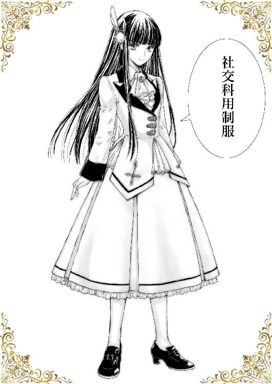
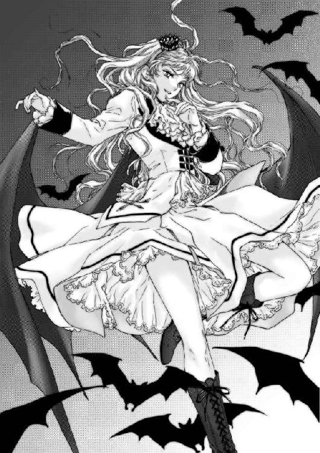

| ガールズキングダム５: お給金と幽霊騒動 (ＧＬ文庫) | |
| なよ | |
| ainakapublishing (2017) | |





私立天使女学院――。
小高い丘の上にそびえるお城のような学び舎は、創立百周年を迎える由緒正しきお嬢様学校として、全国にその名を響かせている。
蝶よ花よと愛でられながら、淑女として羽化する前の、天使のような少女達が過ごす庭。
そこに、十年ほど前から新しい花が咲くようになった。
お嬢様達のお世話をする為に、メイドを志すたんぽぽのような花たち。
白百合の傍に咲き誇り、力強く大地に根を張り、真っすぐに先だけを見つめる。
そこはお嬢様とメイドを志す者が共に過ごす、世にも珍しい学び舎なのだった。
一、初めてのお給金
五月も終わりに差し掛かったある日の事――。
朝のホームルーム前のわずかな時間、わたしたち家政科のクラスでは、ちょっといつもと違う空気が流れていた。
なんだか落ち着きがないような、何かを心待ちにしているかのような、どことなく浮ついた感じの空気――。
はて、何かあったっけ？ と考えを巡らせてみても、特に思い当たる節はなかった。
クラス全体が浮かれているのだから、きっとわたしにも関係のあることだと思うのだけど――。
まあ、ここしばらくは絵理栖様のお店のごたごたに巻き込まれて、授業にもあまり身が入らず、そちらにばかり気を取られていたので、クラスの変化に気が付けていなかった、ということは十分にありえる。
となれば――
「ねえねえ、きららちゃん」
わたしは腕を伸ばして、隣の席に座って先生が来るのを真面目な顔で待っている、きららちゃんのわき腹をちょんとつついた。
「ひゃっ」
途端に、今まで聞いたことのないような可愛らしい声と共に、これまた今まで見たことのないような怒りのオーラを立ち上らせたきららちゃんが、身をよじらせたままゆっくりとこちらを振り向いた。
どうやらきららちゃんは、わき腹が弱点だったようだ。
「三途の川の感想を聞かせてちょうだいね」
いろいろすっ飛ばして、きららちゃんはにっこりとほほ笑みながら物騒なことを言い放つ。
「ごめんなさい」
わたしは素直に謝った。せっかくこの学院にも慣れてきたのに、この世とおさらばはしたくない。
「で、何？」
きららちゃんがため息をついて片肘をついた。
こんなお茶目なイタズラをしても大丈夫なくらいの仲になれたことに感激しつつ、わたしはクラスの様子について尋ねてみた。
「あのね、なんだかみんなの様子が浮ついているというか、ウキウキしてるというか、普段と様子が違わない？」
「まあそうでしょうね」
きららちゃんはあっさりと肯定する。
「やっぱりきららちゃんは、その理由がわかっているんだ。で、どうしてなの？」
「どうしてって、私にしてみたら、みさきが何も気にかけていないことのほうが不思議なのだけど？」
きららちゃんが眉をひそめて首を少し傾ける。
「や、わたしにも関わりのあることだっていうのはわかってるよ？」
「何言ってるの。みさきと私には関係のないことよ」
「えっ、嘘っ。......だとするとセラフは除外されるようなこと？」
んんっ？ じゃあなんだろ。何か特別なイベントでもあったっけ？。
学年行事やらイベントやらの予定を思い出してみるが、これといったものが浮かんでこない。
「ぷっ、やっぱり何もわかっていないんじゃない」
そこでハッと気が付いた。
「あっ、もしかして引っかけられた？」
「ええ、そうよ。知ったかぶりしてそうだったから試してみたのよ」
「うう......」
素直に知らないと言っておけばよかった。
「まったく。罰として正解は教えてあげない」
「そんなぁ......」
わたしが情けない声を出すと、さすがに気の毒に思ってくれたのか、きららちゃんはため息をついて付けくわえた。
「まあ、ホームルームの時に先生が言うとは思うけど、そうではなかったら後で教えてあげるわ」
「ほんとっ？ ありがとう」
「わかったら大人しく先生が来るのを待っていなさい」
「はーい」
言われた通りに授業の準備をしながら待つこと数分。
担任の日依先生がやってきて、朝の挨拶が終わった後に告げた一言。
それを聞いて、わたしはとても大事なことを忘れていたことを思い出したのだった。
「みなさん、おはようございます。今日はみなさんに嬉しいお知らせがあります。といっても、何かはもうわかっているみたいですね」
日依先生が教室の中を見廻しながらにっこりと微笑んだ。
わかっていないのは、多分わたしだけなのだろう。
みんなのそわそわ度合いが、さっきよりも増しているのが手に取るようにわかる。
「はい、その通りです」
誰も何も言っていないけど、日依先生は一人で頷く。
「本日、待ちに待ったお給金が支給されます」
「ああーっ！」
クラスメイトが小さくキャーっと歓喜の声を上げる傍で、わたしは盛大に大声を上げて立ちあがってしまった。
「ぷはっ」
そんなわたしの様子を見て、隣できららちゃんが隠すことなく吹き出した。
「はっ」
しまった！
全身が、カーッと熱くなる。
きっと今のわたしはゆでダコのようになっているに違いない。
「はい、みさきさん。素晴らしいリアクションありがとうございます」
日依先生が追い打ちをかけると、クラスメイトが一斉に笑いだす。
うう、恥ずかしい。
頬を両手で押さえながら静かに座り、机に突っ伏した。
いや、でも待って。日依先生はなんて言った？ お給金？
そうだ、すっかり忘れてた。
貰えるとは聞いていたけど、本当に支給されるんだ。
確かにこれは待ちに待っていたものだ。
「いいですか。みなさん嬉しいのはわかります。これは貴女達がこの学院で労働したことに対する正当な報酬です」
日依先生の声に顔を上げる。
「しかし、勉強中の学生である貴女達が報酬を頂けるのは、誰のおかげであるのかわかっていますね？ 将来お仕えすることになるかもしれない社交科のお嬢様達。また、その親御さん。その方たちへの感謝を忘れてはいけません。お給金を頂く以上、プロフェッショナルな自覚を持ち、それに見合った働きができるようにより一層精進してください」
『はい』
さっきまで笑っていたクラスメイトが皆真面目な顔で頷いた。
「お給金の使い道は自由ではありますが、あまり無駄遣いはしないように。それから、すでに専属契約をしている場合は、お嬢様に対して何らかの感謝の気持ちを表すといいかもしれませんね。それではお給金の明細を渡しますので、出席番号順に取りに来て下さい」
「うふふふふっ」
初めてのお給金の明細を手にしたわたしの口から、自然に笑みがこぼれた。
ああ、なんて素晴らしいの。
初めは「メイドになる為の勉強なんて」と思っていたけど、いざお給金を貰ってみれば、こんなに素晴らしい制度はないと思ってしまう。
お金を稼ぐのは社会に出てからと思っていただけに、喜びもひとしおだ。
メイドも意外と悪くない。
そんなことを過去のわたしが聞いたら、眉をひそめていただろう。
でも人は変わるもの。姫子さんという、わたしにとって最高のお嬢様に出会い、着実に夢の実現に向かっている......はずなのだから、考えくらい変わるというものだ。
うん、よしよし。とりあえずこれは全部貯金に回すとして......いやドーナツくらい買ってもいいかな。
何せ自分の労働で稼いだお金なのだから、それくらい買っても罰は当たらないだろう。「みさき」
「なあに、きららちゃん」
「......きもっ」
嬉しさのあまり、猫なで声で返事をすると、きららちゃんは露骨に顔をしかめた。
「気持ち悪いだなんて酷いよ」
「素直な感想を言ったまでよ。それよりも――」
きららちゃんは真面目な顔でわたしの袖を引っ張ると、おでこがぶつかりそうなくらいの距離まで顔を近づけてきた。
「あなたまさか、全部貯金でもしておこうだなんて考えてないわよね」
「ど、どうしてそれを？ きららちゃん、もしかしてエスパー？」
「違う。そんなことみさきの顔を見ていればわかる。何も考えずに、お給金貰えてハッピー。でも使わずにおこうかな、って顔に書いてある」
「嘘っ」
慌てて顔をこするが、もちろん実際に顔に何か書いてあるわけもない。
「嬉しいのはわかるけれど、私たちは何？」
「な、何って......」
こういう聞かれ方をするときは......。
「ええと、セラフ？」
「そうよ」
どうやら正解だったようだ。
「お給金の明細をちゃんと見た？」
「そりゃまあ」
お給金は掃除や、食事の配膳やお片づけ、お嬢様のお世話をしている間の時間に対して支払われるので、丸一日働くことに比べれば少ないけれど、一般の学生が貰えるお小遣よりは遥かに多いと思う。わたしにしてみれば大金と言っていい額だ。
「はあー......、その顔は何もわかっていないわね」
わたしの反応が鈍かったのか、きららちゃんはため息をついた。
「いい？」
きららちゃんはわたしの頭を机の下まで抑え込むようにして、さらに顔を近づけてくる。
「みさきはその額が当たり前と思っているかもしれないけど、私たちのお給金は他の人に比べるとかなり多いのよ」
「多い？」
「そう、さらに言うと、私よりもみさきのほうがきっと多く貰っている」
「えっ、わたしってそんな特別扱いを......」
と、そこまで言ってようやく思い出した。姫子さんのセラフになる前に言われたことがあったことを。
セラフになると特別手当がもらえるとかなんとか。
慌てて明細を取り出して確認してみる。
すると、確かに色々ある項目の中に、『特別手当』とそのまま書いてある場所があったのだ。
「もしかしてこれ？」
軽く震える手で明細をきららちゃんに見せてみる。
「そうよ。まあ明細はあまり他人には見せない方がいいけど――やっぱりみさきの方が多いわ。みさきのほうがセラフになってからの期間が長いし、姫子様のお部屋に行く回数も多かったでしょ？ その分は時間外手当に入っているわね」
「そ、そうすると......」
ごくりと息を飲んだ。
正確な数字はわからないけど、セラフとしての手当、姫子さんのお部屋でのお世話をした時間。それらの報酬のおかげで、何もない場合に比べて倍近くになっている気がする。
「今さらだけど、セラフになるって結構凄いこと？」
「ほんっとーーーに今さらねっ。セラフになりたくてもなれない子だって結構いるのだから、運やら努力やら色々あるけど、セラフになれるということは凄いことなのっ」
再び喉がごくりと鳴る。
確かにわたしはセラフになることが目的でこの学院に来たわけではないからそれほど意識していないけど、セラフになるということは将来を約束されたも同然なわけだ。
社交科のお嬢様に気に入られて、しかも専属契約してもらいセラフになってしまえば、卒業後もそのままお嬢様の元で働く事が出来る。
しかも、この学院に通う社交科の生徒は、かなりのセレブ階級とも言えるご家庭のお嬢様ばかり。
普通の家庭でメイドとして働くよりも、何倍も条件がいいのだ。
そんなセラフにわたしときららちゃんはなってしまっている。
「わかってもらえたところで本題よ」
「？」
きららちゃんが頭を上げたので、わたしも机の下から頭を上げた。
「先生が先ほど最後に言った事を覚えている？」
「ええと......」
なんだっけ。お給金の使い道のことだったと思ったけど、最後に何を言っていたっけ。
うーん。お給金が貰えることに舞い上がって、何も覚えていない。
分かっているふり......はもうやめておこう。
「覚えていません」
「しょうがないわね」
きららちゃんは小さくため息をつく。
「先生は専属契約している生徒は、契約していただいているお嬢様に対して何らかの感謝の気持ちを表すといいかもしれないと言っていたわ」
「ああ、そんなことを言っていたかも。確かに、姫子様には感謝しないといけないし、ありがとうございますって言っておかないとね」
最近、姫子さんと二人きりの時以外は様付けで呼ぶようにしたのだけど、言うたびに姫子さんがわたしのお嬢様なんだと自覚して、少し気が引き締まる。それだけじゃなくて、他の人たちが呼ぶ「姫子様」と、わたしの「姫子様」は意味が違うんだって変な対抗意識まで芽生え始めている始末。
姫子さんのことを、すっかり「わたしだけのお嬢様」という認識になってしまっているのだ。
だから、今なら心から「ありがとうございます」と言えるのだけど――。
「そうじゃないわ」
きららちゃんがわたしの言葉を一蹴する。
「言葉で言うのも大事だけど、今回の場合はちゃんとした贈り物という形で返さないといけないの」
「贈り物？」
「ええ、お給金全部使えとは言わないけれど、その中の一部を使ってお返しをする、そういう習慣になっているのよ」
「そうなんだ」
まあ分不相応なほどのお金を頂いているのだから、それくらいはしたほうが良さそうではあるけれど――。
「それで、何を贈ればいいのかな」
「それが一番難しいのよ」
言葉通り、きららちゃんは難しそうな顔をした。
「だって、私たちのお給金が多いとしても、神楽様や姫子様にしてみれば大した額ではないでしょう？ それで買えるものといったらたかが知れているし、そもそも欲しい物があればご自分で買えてしまうだろうし......。じゃあ私たちは何を贈ればいいの？ って話になってしまうわ」
「う、うーん。心がこもっていれば、例えばハンカチとかでもいいんじゃない？」
「そんなもので本当にいいの？ 私たちはただのお嬢様に仕えているわけではないのよ？ 天上人と呼ばれているような人たちに贈るのよ？ それで満足してもらえるのかしら。神楽様も姫子様も喜んではくれるでしょうけど、それは心の底から喜んでいるのかしら。神楽様たちだってこの習慣のことはご存じのはずよ。もっと何か特別なことを期待しているのではないかしら」
確かに、姫子さんなら多大なる期待をしているに違いない。何せ今までセラフを作らずに、他の人たちのことを羨ましく見ているだけだったのだから。そこにどんな理由があるのかは知らないけれど、セラフとの生活に夢見ていたのは確かだ。一年間我慢していたせいで、期待も大きく膨らんでいることだろう。
「それにあまりにも普通すぎるものを贈ってしまったら、あそこのセラフは普通のことしかできない普通のメイドね、って思われてしまうかもしれないでしょう？ 神楽様たちのセラフとして、そんな悪評を受けるわけにはいかないわ。だから、私たちにしか贈れない何か特別な物が必要だとは思わない？」
「そんなプライバシーなことまで知れ渡ることはない気がするけど、特別なものを贈りたいっていうのは、まあ分かるかな。どうせなら姫子様の予想以上のことをしてあげたいとも思うし」
その時にどんな表情をするか見てみたい。
「でしょう？ でもだからこそ迷うのよ。何を贈ればいいの？ って」
「うーん......」
二人して黙り込んだ。
何か姫子さんたちの予想を裏切るようなものを贈りたい。でも、それが何かさっぱりわからない。
「困った......」
「困るでしょう？」
わたし好みの服を贈ってみるとか。......いやいや、姫子さんにわたしなんかの感性で選んだ服が似合うとは思えない。それに服なら有り余るくらい部屋にある。第一、ここで買える服といったら目が飛び出るほどの値段をしている。買えるとしてもせいぜい下着くらいだろうか。前に姫子さんにお揃いで買ってもらったやつくらいなら、なんとか買えないこともない。でも、下着を贈るってのもなんかいやらしいし、そもそも特別でもなんでもないだろうし......。
手作りお菓子......はドーナツくらいしかまともに作れない。それに、もうすでにやってしまったからなぁ。金銭的にも大した額がかかるわけでもなし。姫子さんはそんなこと思わないだろうけど、ケチった物を作ったものねと言われないこともない。
アクセサリーは、服同様にわたしが買えるものなんてたかが知れている。こちらは手作りするのも難しい。手先が器用ならぬいぐるみを作ったりなんかも出来るかもしれないけど、姫子さんの部屋にはぬいぐるみがないことから、あまりファンシーな趣味はないのかもしれない。
......一体、姫子さんはどんなものを待ち望んでいるのだろう。どんなものを贈れば喜んでくれるのだろう。
考えれば考えるほど深みにはまっていく気がする。
「ダメだわ。何もいい案が浮かばない」
わたし同様に、きららちゃんも相当悩んでいた。
わたしも、神楽様に金銭で買える物をプレゼントして喜んで貰う図というのが、想像してもまったく思い浮かばなかった。
どうせなら、美奈子様とのデートでもセッティングした方が喜ばれそうだ。
ふむ、これって結構いい案じゃない？
「ねえ、きららちゃん。神楽様には何かのスポーツの観戦チケットを贈るって言うのはどうかな。美奈子様と一緒にいけるようにペアチケットで」
「悪くはない......けど、私に買えるのは一般のチケットまでよ。神楽様ならＶＩＰ席で観戦ができるくらいのものでないとダメでしょう。それだったら神楽様が自分で買ってしまうでしょうね」
「うーん、ダメかぁ」
友達に贈り物をするのとはわけが違う。経済的には遥か雲の上の存在である人たちに、お金で買える物を贈ろうっていうのだ。よほど珍しい物だったりしない限りは自分たちで余裕で買えてしまう。
そうなるとわたしたちに出来ることは......。
そこで時間切れになった。一時間目の授業を告げるチャイムが鳴り、先生が入ってきたのだ。
「はあ、仕方ないわね。授業中も使って考えることにしましょう」
「そうだね......」
絵理栖様の時とはまた違う難問に、わたしの思考はまたしても授業から離れてしまうのだった。
＊＊＊＊
「ねえ、きららちゃん」
一時間目が終わると、わたしはすぐにきららちゃんに話しかけた。
授業中、ちょっとだけいいアイデアが浮かんだのだ。
「何？ いい贈り物でも見つかった？」
「そうじゃないんだけど、ちょっと他の人に話を聞きにいかないかなって」
「他の人に話を？」
「うん、具体的にはみはやさんとか、はるかさんとか、まつりさんに」
天空サロンに所属する先輩セラフの名前を上げると、きららちゃんもピンと来たようだ。
「なるほど、みはやさんたちも同じ道を通ってきているはずよね。あの方たちがどんな贈り物をしたのか聞くことができれば、何か参考に出来るかもしれないわね」
「うんうん」
「よし、なら早速行きましょう」
「あ、待ってよ～」
立ちあがって早足で教室を出ていくきららちゃんの後を、わたしも慌てて追いかけた。
上級生のクラスがある階へ上がるのは結構緊張する。
何しろ一つ上の階へ足を踏み入れた瞬間に、空気が違うものへと変わるのだ。
空気がシャキッとしているというか、入学して間もないわたしたちと違って浮ついた感じが消えて引き締まっているのがわかる。
そんな中、わたしときららちゃんは初めにみはやさんの元を訪れていた。
「教室棟で会うのは初めてね？ 何か大事な相談でもあるような顔をしている......かな？」
鈴を転がしたような可愛らしい声で、みはやさんは少しだけ首を傾けた。その仕草が可愛らしくて思わず頬が緩んでしまう。
優しげな瞳は慈愛に満ちて、その瞳で見つめられると、心が浄化されてしまいそう。左右に垂らしたゆるいカールのかかった髪を胸の前で一つにまとめ、まるでマフラーでもしているような様は、見ている者の心を温かくさせる。
と、今は見惚れている場合ではなくて――。
「あのですね、みはやさんにお聞きしたいことがありまして」
あまり時間も無いので、廊下へ出てきて貰って、早速本題に入る。
「聞きたいこと？」
「実はですね。わたしたち初めてのお給金を貰いまして」
「ああ、そういえばそういう時期だったわね。ん、なるほど、なんとなく言いたいことの予想はつくけど」
みはやさんが右手の人差し指を、顎にちょこんと当てて小さく頷く。
「はい、多分その予想通りで、なんでも専属契約をしていただいてから貰った初めてのお給金で、何かプレゼントを贈る習慣があるとか......」
「そのプレゼントに何を贈ったらいいのか思いつかなくて、私の時のことを聞きに来たのね」
ああ、みはやさんは察しが良くて助かる。
「その通りです。何か参考にできればと思いまして」
「ぶしつけにお聞きしますが、みはやさんは菫様に何を贈ったのでしょうか」
きららちゃんがずいっとわたしを押しのけるようにしてみはやさんの前に立ち、遠慮なく質問をぶつける。
みはやさんのお嬢様は宮森菫様。お二人とも二年生で本当に仲が良く、天空サロンでも仲睦まじい姿を良く見かける。良き主に良きメイド。模範的な主従関係として学院内でも一目を置かれているらしい。
そんな理想的な関係を築いているみはやさんが何を贈ったのかわかれば、かなり参考になるに違いない。
「うーん、初めに謝っておくけれど、私のはあまり参考にならないと思うわ」
「えっ？ ど、どうしてでしょうか」
「それはね、自分で言うのはちょっと恥ずかしいのだけど、歌を贈ったからよ」
「ああ」
納得した。
みはやさんはその美しい声で歌うのが好きな方で、透き通るような美しい声をしているのだ。菫様はみはやさんの歌を非常に気に入っていて、天空サロンにある菫様のパーソナルスペースからはよくみはやさんの歌声が聞こえてきたりする。
「色々な人に協力して頂いて、その時に歌った曲や過去に歌ったことのある歌をまとめて、ＣＤなんかにもしちゃったりしてね」
みはやさんは恥ずかしそうに頬を染めた。
「それは是非わたしも聞いてみたいくらいですけど......」
歌......これはもうみはやさんでなければ出来ない贈り物だ。
わたしなんかが歌っても、贈り物になんて到底ならない。
「きららちゃんは歌声に自信があったりは――」
「するわけないでしょう」
残念そうにきららちゃんは答えた。
「というわけで、あまり参考にならなくてごめんなさいね」
みはやさんが申し訳なさそうに顔の前で両手を合わせる。
そんな可愛い姿を見せられては「いえ、とんでもございません」という他ない。
「みはやさんの真似をすることはできそうにないですけど、姫子様に贈ったら喜ばれそうな物って何か思いついたりしませんか？」
「神楽様にも何かいいものがないでしょうか」
「そうねぇ」
みはやさんは顎に人差し指を軽く当てて、考え込む。
「姫子様はみさきちゃんからの贈り物ならなんでも喜んでくれそうだけど、神楽様は難しいわね。あの方意外と質実剛健というか、余計なものは欲しがらないたちだから。でも、あやかさんたちはそういうことをしていなかったはずだから、きららちゃんが贈り物をすれば姫子様同様に喜んでくれるのではないかしら」
「うーん、そうですか」
何でもと言われるとこれまた難しい。確かに、姫子さんなら何を贈っても喜んではくれるだろうけど......。
「ふふっ、今の答えでは満足できないといった感じね」
「いえそんな......」
「いいいのよ、だって場当たり的なものは贈りたくないということなのでしょう？ 自分にしか贈れない何かを探したい、そういうことではないの？」
「そう......ですね、きっと」
「私にしか贈れないもの、心の底から神楽様が喜んでくれる物、そういたったものを探したいです」
「それは、きっとすべてのセラフが探しているけれど、なかなか見つからないものでしょうね。私では答えを見つけてあげることができないけれど、応援しているわ。頑張って」
みはやさんは、二人の肩を優しく抱いて応援の気持ちを注いでくれる。
『はい』
なんだかやる気が溢れてきた気がして、きららちゃんと二人で元気に頷いた。
具体的な答えは見つけられなかったけど、方向性は見えてきた。
みはやさんが歌を贈ったと聞いた時、すごく羨ましかった。それはみはやさんにしか贈れないものだから。そういうものをわたしも姫子さんに贈りたい。
「ありがとうございました。わたしたち他の方にも話を聞いてみたいと思いますので、これで失礼します」
「ええ、頑張ってね」
みはやさんに見送られ、わたしたちははるかさんの元へと向かったのだった。
「懐かしいですね」
開口一番、はるかさんは思い出深そうに呟いた。
「はるかさんも何を贈るか迷ったんですか？」
はるかさんは鳴神稲穂様のセラフだ。稲穂様は所属資格が身長１４５センチ以下という、猫屋敷飛鳥様の支配するサロン・西天離宮に勧誘されそうなほど小柄な方で、そのセラフであるはるかさんはというと、稲穂さまより頭一つ分ほど背が高い。この二人の関係はちょっと変わっていて、稲穂様がどうもお笑いが好きらしく、はるかさんに突っ込みを入れさせていたりと、知らない人がみたらハラハラするようなことを良くしている。
そんな稲穂様に、はるかさんが何を贈ったのが実に気になるところだ。
「迷ってはいないのですが、失敗しました」
「はるかさんが失敗ですか？」
稲穂様のことを一番よく知っているはずのはるかさんが失敗なんて、どんなことがあったのだろう。
「わたしが稲穂様のセラフになったのは一年生の夏頃でした。稲穂様がお笑い好きというのはまあ知っていたのですが、あの事を気にしているということがまだわかっていなかったのです」
「あの事......ですか？」
「ええ......」
わたしが繰り返すと、はるかさんは沈痛な面持ちを浮かべた。
「きっといいネタになるだろうと、ランドセルを贈ったのですが――」
「あっ......」
「ああ......」
わたしときららちゃんは同時に察すると、言葉では言い表せない溜息をついた。
「お二人ももうすでに分かっていると思うのですが、稲穂様は意外と身長のことを気にしていますので――」
そう、稲穂様は常に無礼講で構わないと言った感じのお嬢様なのだけど、ただ一点、身長のことだけは気にしているらしいのだ。西天離宮に入れなかったことを喜んだり、自分で身長のことをネタにするわりには自分で傷ついたり。
「稲穂様は優しい方ですから怒られたりすることはなかったのですが、血の涙を流しそうな笑顔で『ありがとうなの』と言われてしまいました」
「うわぁ......」
それは壮絶な修羅場だったことだろう。
「まあ、その後でお詫びに園児服を贈ったところ、呆れたような溜息をついた後で笑顔になり『そうそう、稲穂は小学生じゃなくて幼稚園児なの。この新しい制服を着て......ってなんでなのーっ』と吹っ切れたようなノリツッコミをしてくれました」
「引くどころか、さらに攻めていったんですね」
「なんて勇気のある......」
その話を聞いて、わたしときららちゃんはごくりと息を飲んだ。
普通のお嬢様にしていたら、とてもじゃないけど許して貰えないことだろう。
「まあ、一種の賭けでしたが、おかげで稲穂様とより一層距離を縮めることができました」
懐かしむようにはるかさんは微笑んだ。今はもういい思い出になっているということだ。
「ふふっ、他人の心がわからない以上、心の底から喜んでくれるものを贈るのはとても難しいことです。でも、わたしが言うのもなんですが、失敗してもいいと思いますよ。二人が一生懸命考えて贈ってくれたものなら、必ず受け入れてくれるはずですから。そこから新たな一面を発見する、ということもありえますからね」
体験者の言葉なのだから、非常に説得力がある。
「あの、とても貴重なお話しありがとうございました」
「失敗談を聞けたことで、少し気が楽になった感じがします」
「そうだ、一ついい案が思い浮かびました」
わたしときららちゃんが頭を下げると、その後頭部にはるかさんの弾んだ声が掛けられた。
『なんでしょうか』
わたしときららちゃんの声が重なった。
失敗を経験したはるかさんの案。これは是非参考にさせてもらいたいところだ。
「みさきさんときららさんで漫才をすればきっと喜んで――」
『しないです』
最後まで言わせず、スパッと話をぶった切った。
「それではもうすぐ次の授業が始まりますので戻ります」
「ありがとうございました。失礼します」
スタスタと後ろを振り返らず、わたしたちは歩きだす。
その背後で、
「ふっ、二人ともよい反応ですよ」
とはるかさんの嬉しそうな声が聞こえたのだった。
二時間目の授業が終わると、わたしときららちゃんは再び集まり、次は誰に話を聞きに行こうか相談し始めたのだけど......。
「次はまつりさんのところかな」
「そうね。......でも、どうしてかしら、あまりいい話が聞けそうにない気がするのは」
「うっ......そうだね」
まつりさんは非常に優秀なメイドであることは間違いないのだけど、そのまつりさんがお仕えしているお嬢様というのがひと癖もふた癖もあるお方なのだ。
鳳条冴子様と呼ばれるそのお嬢様は、ドが付くほどのサディスティックな方で、自らのセラフに対してかなり厳しく接していたりする。
しかし、そのセラフであるところのまつりさんも、それほど嫌な素振りを見せ......、いや、嫌がる素振りは見せているが、二人は相性がいいのかどうかわからないけど、冴子様の行為を受け入れているようなのである。
そんなお二人だから、初めてのお給金でのプレゼントもきっと普通じゃないと想像できてしまうのだ。
「きららちゃんは、まつりさんが何を贈ったと思う？」
「そ、そうね......」
きららちゃんは一瞬難しい顔をした後、
「首輪を買わされたとか......」
お嬢様学校に似つかわしくない単語を口にしたのだった。
「プレゼントと言っていいのかわからないけど、ありえなくもなさそう」
げんなりとして返事をする。
「みさきは何だと思う？」
「そうだね......」
わたしも少し考えて、
「お給金全部取られたとか」
もはやプレゼントでもなんでもないことを口走ったのだった。
「借金返済ならありえるわね」
きららちゃんはわたしの返答を否定しなかった。
そういえば、まつりさんは、冴子様に多額の借金を肩代わりしてもらった代わりにメイドをしているという事情があったことを思い出す。
「止めましょう、話を聞きに行くのは」
きららちゃんが机に両手をついてうなだれた。
「そうだね。何もパンドラの箱を自分たちで開ける必要はないよね」
「ええ。希望が残っている可能性が、限りなくゼロに近いんですもの」
「だとすると、他に話を聞けそうなのは......」
自分が知っている上級生で、セラフになっている人を思い浮かべる。
「めいさんなら、飛鳥様の一番欲しがっていたものを差し上げることができる気がする......かな」
他にもエコールキッチン・エリスで働いているゆきなさん、みづきさん、はなかさんの名前も思い浮かんだが、あの人たちはセラフではなく、まだエクスシアだったか。
「そうね。めいさんなら良い話を聞けるかもしれないわね」
「ただ、問題が一つ」
「何？」
「めいさんのクラスを知らないのだけど」
「......」
きららちゃんは呆れたように溜息をついたけど、同じサロンに所属しているわけではないので、知らなくて当然だと思う。
「まあ、ここで時間を潰していても仕方がないし、とりあえず三年生の教室のある階へ行って、探してみることにしましょう」
「そうだね」
教室棟の四階に上がると、二年生のクラスを訪れた時とはまた違う空気が流れている気がした。
シャキーンとしているのは一緒なんだけど、どことなく余裕も感じられる。
それがどうしてなのかは、すぐにわかった。
すれ違う上級生の胸元を良く見れば、そこには金や銀の校章が取り付けられた人ばかり。
なるほど、セラフやエクスシアとしての自信がこの余裕ある空気を生んでいるようだ。
そんな上級生のお姉さま方の視線を一身に受け、わたしたちは廊下を歩いていく。
......一身に視線を集めている？？？
「みさき、なんだかとても見られている気がするわ」
その視線をきららちゃんも感じているのか、いつもの強気な態度はどこへやら。気がつけばわたしの一歩後ろに体を引いていた。
「ちょっときららちゃん。わたしを先頭にしないでよ」
「だって、こんなに注目されるなんて思っていなかったもの」
みはやさんたちの元を訪れた時は、教室の場所も分かっていたし、サッと行ってサッと帰ってきたのであまり気にならなかったのだけど、やっぱり上級生の廊下を下級生が歩いているのは相当目立つのだろうか。それとも上級生の廊下を歩くには、暗黙のルール的なものがあって、わたしたちはそれを守れていないとか。
そんなことを考えていたら、
「ねえ、あの子たち、みさきさんときららさんじゃない？」
「あら、本当」
「私、初めてみたわ」
「へえ、あの子たちが話題の一年生なのね」
などと、三年生のお姉さま方のひそひそ話が耳に届いてきたのだった。
しまった！ わたしたちは自分で望んだわけではないけど、学院内でちょっとした有名人になってしまっていたのだった。
天上人にして天使女学院の理事長代理をしている姫子さんのセラフに、入学初日になってしまったわたしと、神楽様に暗黙のルールを破ってまでセラフにして欲しいとお願いし続け、ついにはその通りセラフになってしまったきららちゃん。
二年生はまだ自分たちのことで忙しかったりするからそこまで注目されなかったのかもしれないけど、三年生ともなれば周りを見る余裕が出てくるのだろう。
すれ違う上級生すべてが、わたしたちに好奇の視線を投げかけてきていた。
うう、恥ずかしい。
珍獣さながらの視線を受け続けたわたしたちは、いつの間にか体を縮めるようにして歩いていたのだった。
そんなわたしたちを気の毒に思ったのか、それとも珍獣と触れ合いたいという奇特な方なのか、
「みさきさんときららさん？ 三年生の教室に何か御用なのかしら？」
と、救いの手を差し伸べてくれるお姉さまが現れたのだった。
「はい、ある人を訪ねる最中でして......」
答えながら、その人を見ると、どこかで見たこのあるような......。
「そう、よろしければ私が案内しましょうか」
隙もなくそつもないその立ち姿は、確かに見知った人のはずだ。
ほんの少し藍色の混じったような長い髪を綺麗に結い上げ、美しい大人の女性といった雰囲気を漂わせ、左右に分けられた前髪の下からは、優しげな瞳がこちらを慈しむような視線を投げかけていた。口元にはほんの少し頬笑みを添え、見る人に安心感を与えてくれる。
なんて素敵なお姉さま。
これだけ綺麗な人だったら忘れないとは思うのだけど......。
頭をフル回転させて一生懸命思い出そうとしていると、きららちゃんの方が先に思い出したのか、その人の名を呼んだ。
「あおいさま......ですね。ありがとうございます」
あおいさま......。
あっ！ と、わたしも思い出した。
あおいさま。そう、その名前と姿は忘れもしない――いや、忘れてはいたのだけど――、紫庭園で見た紫苑様のセラフその人だ。
きららちゃんは直接会っていなかったと思ったけど、きららちゃんのデータベースに名前が入っていたのだろうか。勉強熱心なきららちゃんであれば、お披露目会で伺った人たちのことを調べていてもおかしくはない。
「うっ......」
そのお披露目会のことを思い出し、冷汗が頬を伝った。
あれはちょっとしたトラウマというか、猛獣の檻に足を踏み入れた気分を味わったというか、とにかく今までにない恐怖体験をしてしまった出来事だった。
思い出したくない記憶......それゆえに、あそこであった出来事を無意識に封印してしまっていたのかもしれない。
まぁ実際に怖かったのは紫苑様であって、あおいさまではないのだから、そこまで怯える必要はないのだけど......。
「どうかした？」
あおいさまが心配そうにわたしの顔を覗き込んでくる。
「いえ、なんでもありません。少し注目を浴びてしまっていたようなので、困っていたところなんです」
素直に言うと、あおいさまは小さく微笑んだ。
「そうね。二人はとても有名だもの。三年生の間でも、しばらくは話題に事欠かなかったくらいだわ」
「う......」
「申し訳ありません」
苦い顔をするわたしと、何故か謝るきららちゃん。
「うふふ、謝る必要なんてないわ。紫苑様も、特にみさきさんのことは気にかけているわ。姫子様の下でうまくやれているか心配みたい」
「ええっ？ 紫苑様がですか？」
今にも襲いかかってきそうなオーラを出していたのに、いったいどういう風の吹きまわしなのだろうか。
「姫子様は紫苑様の妹みたいなものだから、色々と気になってしまうのでしょうね」
「そう......なのですか？」
というしかない。
「大丈夫。紫苑様は気に入らない人にはそれはもう酷く接することもあるし、王族か神かのように振舞うことはあるけれど、とても優しい方よ」
嘘だ。絶対嘘だ。
王族か神かのような振る舞いは本当だろうけど、優しいというのはきっと、多分、嘘だ。
しかし、そんな突っ込みをするわけにもいかない。
「そ、そうですね」
「ふふ、目が泳いでいるわよ」
あおいさまが微笑みながらわたしの頬をちょんとつついてくる。
「ひうっ」
やはり、心にもない返事は見透かされてしまった。
「まあ、紫苑様の表面だけを見ると、怖いかもしれないわね。でも、付き合いを続けていけば、その人の良さも分かってくるはずよ」
「そう......ですね」
今度は嘘じゃない返事。
「みさきさんは姫子様のセラフなのだから、これからも長い付き合いになるはずだものね」
「......あっ！」
そう......なる......んだよね？ 本当なら。
姫子さんと紫苑様は近縁者っぽいから、卒業後もお仕えするなら、そうなるのかもしれないけど――
当然他の人は知らないけど、わたしが姫子さんのセラフになるのは、とりあえず一年間だけということになっている。
だけど、そんなことをここで言うわけにはいかないし。もし言ってしまったら、ここで聞いていた三年生のお姉さま方が、卒業するまで話題にするのは確実だ。いや、卒業後も語り継がれるに違いない。
姫子様の偽りのセラフになった無法者と――
「ソ、ソウデスネ。シオンサマトモナカヨクナレルトイイナァ」
「みさきさん？ また目が泳いでカタコトになっているわよ？」
「エ？ ソンナコトナイデスヨ。ナイナイデス」
ひー、完全に頭の中から抜け落ちていた事実だ。このことは紫苑様とあおいさまには絶対にバレないようにしなければ。
もしばれたらどうなることか、想像するだけで心臓が止まりそうになる。
あまりこの話題には触れられないようにしないといけない。
「と、ところであおいさまにもお聞きしたいことがあるのですが」
「あら、何かしら」
「実はわたしたち、初めて貰ったお給金のことで、上級生の方たちにお話を聞いて回っている最中でして......」
「ああ......」
それだけであおいさまも察してくれたようだ。
「初めてのお給金の使い道は迷うわよね」
頬に片手を当てて、あおいさまはほんの少しだけ微笑んだ。
「はい......。あおいさまは、紫苑様に何を贈られたのでしょうか」
「私の場合は、何かを贈ったのではなく、紫苑様の命令で自分の薔薇園を作るように言われたので、それの費用に使ったわね」
「そうなんですか。ということは、紫庭園の他にもあおいさまが管理している薔薇園があるのですね？」
「ええ、紫庭園のすぐ傍なのだけれど、そこで青薔薇を育てているわ」
「青い薔薇ですか。なんだか素敵ですね」
紫苑様に頂いた紫の薔薇はとても美しいものだった。青い薔薇というのも、きっとそれに勝るとも劣らないくらい美しいのだろう。
「でも確か、青い薔薇というのは、自然界には存在しないものではなかったでしょうか」
きららちゃんが、口元に丸めた拳をあてながら、自信なさげに呟いた。
「ええ、その通りよ良く知っているわね。でも、それは昔の話。今はバイオテクノロジーの進歩によって、青薔薇を実現することに成功しているわ」
バイオテクノロジー......。聞いただけで頭が混乱しそうな言葉だけど、それだけ技術が進歩したということなのだろう。
「それは凄いですね」
「ええ。でも、残念ながら完全な青色というはまだ難しくて、どちらかといえば青紫色になってしまうのかしらね。だから、私の薔薇庭園は紫庭園とほぼ同化してしまっているから、見分けるのは難しいと思うわ」
「そうなのですか」
「ふふ、よかったらまた紫庭園に遊びにきてちょうだい。その時は私の育てた薔薇をプレゼントするわ」
「そ、それは是非機会があったら、お、お願いしたいです......ね」
あおいさまの育てた薔薇には興味があるけれど、そこへ行くということは紫苑様に挨拶しないわけにはいかなくなる。
行きたいけれど紫苑様は怖い。
うう......まだ、ちょっと紫苑様の前に立つ勇気はないかも。
そんなわたしの様子を察したのか、
「まあ、気が向いたらで構わないわ。みさきさんも色々と大変でしょうしね」
あおいさまは優しくフォローしてくれたのだった。
「いずれ、お伺いしたいと思いますので」
今のわたしにはそれだけ言うのが精いっぱいだ。
「ところで、二人は誰かを訪ねる最中だったのよね？」
「はい、実はええと、飛鳥様のセラフである、めいさんにもお話を聞いてみたいと思っていたのですが」
「なるほどね。いいわ私が案内してあげる。めいさんは確か三組だったかしら。付いてきてちょうだい」
「はい」
「すみません、めいさんに取り次いでいただけるかしら」
めいさんのいるという三組の入口で、近くの生徒にあおいさまが要件を伝えると、すぐにめいさんはやってきてくれた。
「あら、みさきさんときららさん。教室棟で会うのは初めてですね」
メイドの模範のようなおしとやかさで、めいさんはあおいさまと挨拶を交わした後、わたしたちに微笑みかけてきた。
うーん、なんて惚れ惚れする立ち振る舞い。
きっと、この二人をセラフにしたいと思っていたお嬢様は、山ほどいたに違いない。
「それでは私は行くので頑張ってね」
「はい、ありがとうございます」
「ありがとうございました」
去りゆくあおいさまにお礼を言ってから、めいさんに向き直る。
「実は今日は少しお聞きしたいことがあったので、こうして訪ねさせていただきました」
「あら、飛鳥お嬢様のスリーサイズでも聞きに来たのですか？」
「......」
思考停止すること約一秒。
「いえ、そうではなくてですね」
「だとすると、飛鳥お嬢様の趣味かしら。それともお風呂で一番最初にどこを洗うか知りたいとか？ あまつさえお尻にハート型の蒙古斑があることを突き止めて脅しに......」
「違いますからぁ～」
飛鳥様一途なめいさんらしいといえばそうなんだけど、今はその話を聞いている時間はない。申し訳ないと思いつつ、こちらの話を切り出さなければ休み時間が終わってしまう。
「あの、飛鳥様にも関係する話ですので、まずはこちらの話を聞いて下さい」
「何でしょう」
飛鳥様の名前を出すと、ぴたりと暴走モードが止まった。
ふぅ、よかった。
「実はですね、初めてのお給金での贈り物について相談したいことがありまして、参考のために今色々な方にお話を伺っている最中なんです」
「そうなのですか。なるほど、それは難題ですね。何しろお二人のお嬢様は学院内でも高い地位にいる方たちですものね」
「はい......」
「それで、私が何を飛鳥お嬢様に贈ったのか聞きたいのですね」
『お願いします』
きららちゃんと一緒に頭を下げる。
「そうですね......多分参考にはならないと思うのですが......」
まさかめいさんも、はるかさんと同じでランドセルや園児服を贈ったとか......。小さい子好きのめいさんならありえる......。
しかし、めいさんの口から出た答えはまったく違うものだった。
「私は飛鳥お嬢様にティアラを贈りました」
「ティアラ......ですか？」
「それは、飛鳥様が現在身に着けておられる、西天離宮の主である証のティアラ、ということでしょうか」
「そうです」
わたしたちの問いに、めいさんは頷いた。
「幸い、銀自体はそれほど高価ではありませんから、材料を揃えて自分で加工しました」
まさかの自作。
「それは、確かに真似できませんね......」
「手作り、というのは心が籠っていてよさそうですが、ティアラは神楽様はすでに身に着けているし、私の腕では付け替えていただけるような物を作るのは無理だし......」
きららちゃんは苦しげに呻いた。
そんな様子を見て、めいさんは心配そうに表情を曇らせる。
「お二人ともそんなに難しく考えなくてもいいと思いますよ。確かに姫子様や神楽様にお礼を贈るというのは大変かもしれませんけど、感謝の気持ちを込めたものであれば、必ず喜んで受け取ってくれるはずですから」
「そう......なんですけどねぇ」
わかってはいるのだけど、どうせなら最高の物を、と思ってしまう。
「そういえば、アレの存在は知っているのかしら」
「アレ......ですか？」
何かを思い出したように、めいさんがこの状況を打破できるかのようなものの存在を匂わせた。
「ええ。多分、最高の贈り物を、と考えているお二人だから、他の方たちは教えなかったのだと思うのですけど」
「な、なんですか、それはっ？」
めいさんの眼前に迫る勢いで食いつく。
そんな飢えた飼い犬のような姿のわたしたちに、めいさんは優しい微笑みを浮かべたまま答えてくれる。
「私たちの寮の一階に購買がありますよね」
「はい」
「そこに、実は家政科の寮にしか売ってないスペシャルなお菓子があるんです」
「ええっ？」
「そんなものがっ？」
「今のお二人のように、お礼の贈りものに迷う生徒が多いから、という配慮でしょうね。そのお菓子はこの学院内でも一、二を争う美味しさと言われ、買うことができるのはセラフとなった生徒のみという制限があるんです。お嬢様方は当然そのことは知っていて、初めてセラフを迎えた暁には、そのお菓子がついに食べられる、ということをとても楽しみにしているそうなんです。姫子様は当然食べたことがないでしょうし、神楽様も食べたことがないのじゃないかしら。九絵姉妹の性格だと、あえてそれだけは絶対に贈らない、という可能性の方が高そうですから」
「確かに......」
きららちゃんが神妙な面持ちで頷く。
「だから、そのお菓子を買って、お茶会を開くだけでもじゅうぶん喜んでもらえると思いますよ」
「うーん、確かに姫子様ならそういったことに憧れを抱いているかも」
むしろ、ようやく食べられると、心待ちにしている可能性の方が高い。
「きららちゃん、どうかなそのお菓子は」
「悪くないわね。普通のお菓子ではなくて、限定品というのがポイント高いわ。でも、うーん......」
「ふふ、まあ一つの選択肢として、頭の片隅に入れておいていいのではないかしら」
めいさんが優しく微笑む。
「そうですね。とてもいいアドバイスを頂けて感謝致します」
きららちゃんが深々とお辞儀をする。
「とりあえず候補の一つになるね」
限定のお菓子。うん、悪くない。
「めいさん、いいことを教えて頂きありがとうございます」
わたしもめいさんに頭を下げた。
「それじゃあそろそろ教室に戻りましょうか」
きららちゃんが教室内の時計に目をやる。もう休憩時間が終わる頃のようだ。
「うん、そうだね」
「それでは失礼致します」
めいさんにもう一度お礼を言って、わたしたちは自分たちの教室へと戻り始める。
「私も昔は悩みましたから、お二人を見ているとなんだか懐かしい気分になってしまいますね。頑張って下さい」
去りゆくわたしたちの背中に、めいさんのしっとりとした声が届いたのだった。
めいさんのおかげで、一つのアイデアは出来たといえば出来た。
わたしたちにしか買えないお菓子。それがあれば姫子さんは喜んでくれることだろう。
でも、姫子さんの想像している以上のお礼をしたいという気持ちは消えない。
それはきららちゃんも同じのようで、お昼休みになるまで二人して悩んでいたのだった。
＊＊＊＊
いいアイデアが出ないまま、昼食の時間になってしまったのだけど、お給金の話題が出ないか気が気でない。
まだお礼の品が決まってない状態でその話を振られたら、答えに詰まってしまうだろう。
なるべく空気のような存在になりながら、何事もなくこの時間をやり過ごさなければ。
「姫子様、昼食をお持ちしました」
食堂へ入り、姫子さんがいつもの席に座るのを確認すると、わたしはすぐに食事の準備を済ませる。
「みさき、ありがとう」
自分のお仕えするお嬢様の食事を持ってくるのは、セラフやエクスシアの仕事だ。
他にも、今ではお部屋当番なるものも始まっているので、仮仕えするお嬢様の為にそこかしらで忙しく動きまわるメイド姿の生徒が見てとれる。
もうすでに、わたしたちの他にも金の契約を交わしてセラフになった一年生も出てきているらしいので、わたしたちのことも目立たなくなってくるはずだ。これでようやく平穏な学院生活を送ることができるだろう。
自分の配膳を済ませて姫子さんの隣に座り、今日はお澄ましモードで食事を頂く。
極力話さず、目立たず。お給金の話題には触れられないように。
「そういえば、そろそろお給金が出る時期よね」
そう、お給金の話題には......。
「......」
くっ。姫子様が真っ先に切り込んでくるなんて。
いや、ある程度予想は出来ていたけど。
お給金でのお礼について、絶対に期待しているであろう姫子さんだから、話題にしないはずがないのだ。
だけど、まだ何を贈るか決まっていない。そして、姫子さんの考えている以上の物を贈りたいと思っているので、ネタばらしをするわけにはいかない。
と、なれば――
「えと、野球券が出る時期ですか？」
「ぶふぅっ」
盛大に噴き出したのは稲穂様だ。
運の悪い事に口の中に人参を入れた直後らしく、橙色の物体が綺麗な放物線を描いて飛んでいってしまった。幸い飛距離はそれほどでもなかったので、一瞬で稲穂様のセラフであるはるかさんが布巾で包みこみ、何事もなかったように証拠を消してしまう。
「野球じゃないわよ。お給金よ。どうして私が野球のチケットの話をしなければならないのよ」
くっ、姫子さんは完全にお給金の話をするつもりだ。
ええ、もちろんわかっていますとも。
でも、今日だけは......今だけは、その話題に乗るわけにはいかない。
「はあ、おキュウリですよね。今日の食事には入っていないようですが」
「ぶふうっ」
再び稲穂様の口からジャガイモが吹き飛び、はるかさんが何事もなかったかのように片付ける。
今日の献立には肉じゃがが入っているのだ。
「くくっ......」
「ふふふっ......」
今度は稲穂様だけではなく、冴子様や菫様まで押し殺したような笑い声をあげた。
「もう、何を言っているのよっ。おキュウリの話なんてしていないでしょう。だいたいおキュウリって何よ。いくら私でもキュウリをそこまで丁寧に呼んだりしないわよ」
姫子さんのおキュウリ発言で、さらにまつりさんとみはやさんまで小さく噴き出した。
はい、わかっています。わかっていますとも。姫子さんはキュウリに『お』なんて付けて呼んだりしません。
「お給金よ、お・きゅ・う・き・ん」
ついにはわかりやすく、一字一句区切って発音をしだしてしまった。
ここまでされてボケ続けるのは非常に苦しい。
お灸の聞き間違いでもう一回くらい逃げれるか？ なんて考えていたら、珍しく神楽様が窘めるような声を上げた。
「姫子、少し冷静になって周りを見て御覧なさい」
「はい？」
神楽様に言われて姫子さんが周りに視線を向ける。つられてわたしも同じようにしてみると、姫子さんの珍しくヒートアップした声に、みんながこちらに注目してしまっていた。
「あら、私ったらいつの間にか大きな声を出していたかしら」
姫子さんが口元に手を当てながら、顔を真っ赤に染める。
「ええ、淑女らしからぬ大声でしたわ」
「それは失礼致しました。でも、みさきが変な聞き間違いをするものだから――」
「そうね。でも、その話題を今日はしないほうがよいと思うわ」
あ、神楽様はなんとなくこちらの事情を察してくれているような気がする。
「どうしてですか？」
「それは、その......彼女たちにも色々考えがあるみたいだから、わたくしたちは黙って待っていたほうが良いと思うのよ」
「えっ？」
姫子さんがわたしの顔を見る。しかし、わたしは見返すことができない。
「ほら、初めてのアレというのは、慣例があるでしょう？」
神楽様がお礼のことをぼかしながら、姫子さんに伝えようとしてくれる。
「え、ええ。存じておりますわ。だから私は......あっ」
そこで姫子さんも察してくれたようだ。
「あら、もしかして私の勇み足でしたかしら」
「そう......かもしれないわね」
神楽様は曖昧に答える。あくまでも気が付いていない振りをしてくれるようだ。
「わたくしたちがあれこれ言わなくても大丈夫、ということです。......そ、そうよね？ きらら」
「えっ、あ、は、はい。た、たぶん大丈夫ではないかと」
あれっ？ 意外と神楽様も楽しみにしているっぽい？
美奈子様と一緒にいる時のように、若干テンションが上がっている気がする。
「そうですね。私たちの選んだセラフなのですから、何も言う必要ありませんわね」
なんとか切り抜けられたけど、何気に姫子さんたちの期待度を上げてしまったのではないだろうか。
やはり、これではただお菓子を買って、お茶会を開くだけでは済みそうにない。
無表情で食事を再開するわたしときららちゃんに、みはやさんとはるかさんが無言で『がんばれ』とエールを送ってくれたのだった。
「なあに、あなた達初めて貰ったお給金で、変わったことでもするつもりなの？」
「ばかねぇ。あんなもの、きっちりお給金の三分の一で買えるハンカチでも贈ればいいのよ」
昼食が終わり、教室へ戻ろうとするわたしたちの背後から抱きついてきたのは、九絵姉妹だった。
大質量の二つの物体を背中に感じながら、九絵姉妹には話を聞いていなかったことを思い出した。というよりも、まつりさんと同じようにあまり良い話が聞けなさそうだから、勝手に除外していたのかもしれない。
「変わったものというより、私たちにしか贈れない何かを、と考えています」
きららちゃんが、頬をなすがままにまさぐられながら答える。
「先ほどの話を聞くと、あやかさんたちはハンカチを贈ったということでしょうか」
わたしはきららちゃんと違って抵抗してみせる......が、両腕を抱きしめられて封じられていたので、同じように頬をまさぐられてしまった。くっ。
「そんなことするわけないでしょう」
「なんでわざわざ、わたくしたちがそんなことをしなくてはなりませんの」
ああ、はいそうですか。みはやさんの言っていた通り、何もしていないということか。
「逆に私たちのほうがお礼をもらいたいくらいですわ」
「そうそう、メイドの仕事をして、あれっぽっちだなんてやってられませんわ」
あれだけの額を貰ってそこまで言えるとは、さすが九絵姉妹。わたしたち家政科の中でも異質なセラフだけのことはある。
「それで何を贈るつもりだったのかしら？」
「お姉さんたちに教えてちょうだいな」
滅多にしない猫なで声を出しながら、九絵姉妹が頬ずりをしてくる。
「いえ、まだ決まってなくてですね」
きららちゃんが無駄な抵抗をしながら答える。
「めいさんからセラフにしか買えないお菓子があると聞いたので、それも候補にはなっているんですけどね」
私はもう諦めている。
「ああ、そういえばそんなものもありましたわね」
「一度買って食べたことはあるけれど、神楽様にあげたことはなかったかしら？」
「ということは、神楽様は食べたことがないんですね」
きららちゃんが「よしっ」と呟いた。
「あれを贈るつもりですの？」
「結局無難なものにするつもりじゃないの」
「まあ、神楽様も喜ぶのではないかしら」
「食べてみたいと聞いたことがあったようなないような、かしら」
九絵姉妹があーだこーだと言いながら、首を傾ける。
「いえ、あれは候補の一つというか、神楽様がそれで喜んで下さるならそれも贈りたいですが、それ以上の物を何か、と思って探しているところなんです」
「みさきも同じようなことを考えているということなのね？」
「めんどうなことをしますわねぇ」
九絵姉妹が呆れたように溜息をついた。
「だって、姫子様のセラフが変なものを贈ったりしたら、噂が広まったりしちゃうじゃないですか」
「ないない」
「そんなことありえませんわ」
「ありえますって」
なんたって、理事長代理にして、天空サロンの一員である姫子様の注目度は高いのだから。
「あなた随分と姫子様の色に染まってきましたわね」
「姫子様は調教上手でいらっしゃるようでなによりですわ」
「もう、何言ってるんですかっ」
「はいはい、わかりましたわ」
「私たちには関係のないことですから、お好きに頑張りなさいな」
そう言うと、ようやく九絵姉妹はわたしたちを解放してくれた。
そのまま去っていくかと思われたが、ふいに足を止めて同時に振り向き、
「きらら、神楽様も姫子様と似たり寄ったりですわ」
「実質的なセラフはあなたが初めてなのだから、基本に忠実であれば何も問題はありませんわ」
と、何やらよくわからないアドバイスをきららちゃんにしたのだった。
「は、はい。わかりました」
......。
............。
「きららちゃん今ので何かわかったの？」
九絵姉妹の姿が見えなくなってからきららちゃんに聞いたのだけど、
「うーん、よくわからなかったわ」
きららちゃん首を捻っていたのだった。
「まあいいわ。それよりも早く教室へ戻って次の授業の準備をしつつ、何を贈るか考えましょう」
「そうだね......と、わたしお手洗いに行ってくるから先に戻ってて」
「わかったわ。遅れないようにね」
「うん」
＊＊＊＊
「あれ、今のって......」
きららちゃんと別れて、急いでお手洗いを済ませた後の教室への帰り道、ふいに何かを視界の端に捉えてわたしは立ち止まった。
見覚えのある人物が外にいた気がしたのだ。
それを確かめるために窓へ近づいて外を見ると、やっぱり見知った人物がいた。
だけど、その人は心ここに非ずといった表情で、ぼーっと桜の木を眺めているだけで、こちらに気が付く様子がない。
まもなく午後の授業が始まるというのに、まったく動く気配もない。
メイド長がそんなのでは困るなぁ、なーんて珍しくわたしが注意出来る機会なのでちょっと偉そうなことを考えてみたり。
だけど、本当に授業に間に合わなかったら本人も困るだろう。
だからわたしは窓を開けて、桜の木を見上げている人物の名前を呼んだ。
「サラちゃん、何やってるの？」
「......」
返事がなかった。というよりも反応がなかった。
「サーラーちゃーん。もうすぐ授業始まるよーっ」
少し声を張り上げると、ようやく呼ばれたことに気がついたのか、サラちゃんがこちらを振り向いた。
「みさきさん、どうかしまシタか？」
風になびく銀色の綺麗な髪を右手で撫でつけながら、サラちゃんは少し首をかしげる。
うーん、なんという美少女。と見惚れてしまいそうになる。
「どうかしたかじゃないよ。もうすぐ授業始まるから戻ったほうがいいよ」
「......もうそんな時間でシタか。危うく遅刻スルところでシタ。声を掛けてくれて助かりまシタ」
「ううん、それはいいけど、なんだか元気なさげ？」
普段の強気なサラちゃんはどこへやら。すっかり魂が抜けたようになってしまっている。今のサラちゃんは、まるで薄幸の美少女だ。
「いえ、大丈夫デス。少し桜の木を見ていただけですカラ」
「そう？ それならいいけど」
サラちゃんが校舎へ歩いてきたので、もう大丈夫だろうとわたしは教室へと向かう。その後ろで、小さくサラちゃんが人の名前のようなものを呟いていたのだけど、ちゃんとは聞きとれなかった。
教室へ戻って少しすると、午後の授業の開始を告げるチャイムが鳴った。ぎりぎりサラちゃんも間に合ったようで、澄まし顔で席に着くのを目で追いながら、お礼の品を何にするかという問題に頭を切り替える。先生には申し訳ないけれど、午後はあまり授業内容が頭に入ってこないことだろう。
めいさんに教えてもらった限定お菓子は、買ったほうが姫子さんは喜ぶと思う。
だからそれは確定として、もう一つわたしにしか贈れないお礼の品が欲しいところだ。誰でもない、姫子さんのセラフにしか贈れないもの。
とすると、なんだろうなぁ。
わたしにはこれといった取り柄なんてないし、姫子さんが喜んでくれそうなこと......。
......難しい。やっぱり難しい。
どう考えてもそんなもの見つからない。
......いや、姫子さんならどんなものでも喜んではくれるのだろうけど――。
そんな考えが巡り巡って、授業がいつの間にか終わってしまっていた。
「どう？ きららちゃん。いい考えは浮かんだ？」
いつも通り天空サロンへと向かいながら、成果の確認をしようとすると、きららちゃんは意外にも晴れ晴れとした表情を浮かべた。これは、まさか......。
「まあ、概ね方向性は決まったかしら。あとは段取りといったところね」
「ええっ、そんなっ、裏切り者っ」
わたしは何もいい案が浮かばなかったのに、これは酷い裏切りだ。
「ちょっと言いがかりは止めてよね。裏切りも何もないでしょう」
「それは、そうだけど......」
きららちゃんもまだ決まっていないと思っていただけにショックだ。
「それで、何を贈ることにしたの？」
「そうね、教えてもいいけど、神楽様には内緒にしていてね」
「うん、もちろんだよ」
「私はね、あの限定品のお菓子を使ったティーパーティを開くことにするわ」
「ええっ、それだけ？」
きららちゃんは、九絵姉妹に影響されてしまったのだろうか。シンプルにして平凡な案に行きついてしまったようだ。
「言っておくけど、もちろんそれだけじゃないわよ」
「ああ、そうなんだ」
「その席に美奈子様をご招待するわ。そしてペアのティーカップとソーサーを贈ることにしたの」
「おお、それはいいかも。神楽様喜びそうだね」
「ええ」
「......あれっ、でも美奈子様をご招待するのって、わたしが初めに言った案に似ていない？」
「ええ、似ているわね。美奈子様をご招待するのはポイント高そうだから、採用させてもらったわ」
「ず、ずるいっ。わたしにはっ？ わたしには何かいい案はないのっ？」
まさかあの一言が実現してしまうなんて。もちろんそれはいいのだけど、わたしだけ何もいい案が浮かんでないのに、きららちゃんだけもう悩まなくて済むなんてやっぱり裏切りだっ。
「ちょっと、そんな顔で睨むのは止めてよね。ちゃんとみさきのことも一緒に考えてあげるから」
「うう......絶対だよ」
「わかっているって」
なんて言って二人で悩んでみたものの、なかなかいい案なんて浮かんでこない。
天空サロンで仕事をしている最中ももちろん考えていたけど、これといったアイデアは出てこなかった。
何より、あきらかに姫子さんが楽しみにしている様子がひしひしと伝わってくるので、プレッシャーがかかって尚更考えがまとまらない。
「ふふふーん」
珍しく鼻歌なんかを歌ってゴキゲンな姫子さんとは反対に、わたしの胃はきりきりと締め付けられていくのだった。
＊＊＊＊
「とりあえずお給金の事を何も言われなかったのはいいけど、確実に姫子さんの期待度が上がっているよ～」
寮へと戻ると、わたしはきららちゃんに泣きついた。
「そ、そうみたいね。神楽様もなんだか心待ちにしているようだったわね。あまり日を置くとさらに期待度が上昇してしまうでしょうし、明日くらいにお伝えした方がよさそうだわ」
きららちゃんはもうほぼ決まりだから、余裕なものである。
「おかえりなさい」
「って、みさきちゃんどうかしたの？」
わたしの泣き言を聞いて部屋の奥から出てきたのは、ルームメイトのかれんさんとあきらさんだった。
二人はまだ専属契約を交わしていないので、相談するのは少し気が引けるけど......いや、二人なら絶対セラフになることができるはずだから、この悩みを共に分かち合ってくれてもいいはずだ。
ということで二人にも何かいいアイデアはないか聞いてみよう。
「実は二人に相談したいことがあって」
「ちょっとみさき」
「あのね、きららちゃん」
わたしは止めようとするきららちゃんの腕を掴んで、真剣な表情で諭しにかかる。
「これは社交科の生徒全員の問題だと思うの。一人で悩んでいたっていいアイデアは浮かばない。だったらみんなで相談し合えるような空気を作って、みんなで問題解決できるようにした方がいいと思うの」
「まったく、それっぽいことを言って......」
きららちゃんは呆れていたけど、かれんさんとあきらさんはわたしの話に乗ってきてくれた。
「まあまあ、きららさん。私はみさきさんの話に興味があるわ」
「たぶん姫子様のことに関することなんだよね？ 私も聞いてみたいな」
お、っと思った。
かれんさんはこの学院の生徒らしくお嬢様にお仕えすることを目標にしているから乗ってきてくれると思ったけど、あきらさんもとは意外だった。そこまでメイドになることに必死そうじゃないあきらさんは関心薄いかなと考えていたけど、何か心境の変化でもあったのだろうか。しかし、これはいい傾向だ。
さっそくリビングへと移動して、みんなでテーブルを囲うようにして座ると、わたしは話を切り出した。
「あのね、今悩んでいることがあって、セラフになったら最初のお給金でお仕えしているお嬢様にお礼を贈るっていう習慣があるじゃない？ あるのよ。あるらしかったのよ、全然知らなかったのだけど」
「聞いたことはあるわね」
「暗黙の了解ってやつの一つだよね」
二人ともさすがに知っていたようだ。
「そう。それで何を姫子様に贈っていいのか迷っていて。一つはほぼ決まっていて、セラフしか買うことのできないお菓子があるから、それは贈ろうと思ってるの」
「ああ、そういえば、購買に私たちが買うのに似つかわしくないほど豪華な菓子折が置いてあったわね」
「あれ、セラフしか買うことができないんだ。それは知らなかったな」
「うん、そう。だからね、あれを贈れば最低限のお礼は出来るみたいなんだけど、もう一つ、わたしにしか贈ることのできない何かがないかなって探しているの」
「うーん、それは確かに難しいわねぇ」
「特別な何かをっていう気持ちはわかるけど、現実ではなかなか用意できないよね」
かれんさんとあきらさんが考え込む。
「そうなんだよね......」
「もし、私だったら、直接何が欲しいか聞いちゃうかも」
かれんさんは意外と直球派のようだ。
「私なら、その人に使ってほしい実用的な物を贈るかもなぁ。でも、それだとみさきちゃんにしか贈れないってのには当てはまらないね」
「そうだねぇ......それもいいとは思うんだけど......」
あきらさんのアイデアも悪くはないけど、何せ相手は姫子さんなのだ、半端なものは贈れない。
「と、なると、もうみさきさん自身を差し出すしかないのではっ？」
唐突に、かれんさんがとんでもないことを言い始める。
「な、なんですか、それはっ？」
「ほら、よくバレンタインや誕生日のプレゼントで、裸の自分にリボンを巻きつけて私を、あ・げ・るみたいなのがあるじゃない？ あーいうのはどうかなって」
「かれんさん、意外と大胆なんですね」
ジト目でかれんさんを見つめると、
「ち、違うわよ。私がそういうことをするわけじゃないわよっ」
慌てて両手を顔の前で振って否定する。
「っていうか、セラフになった時点で私たちの身柄はお嬢様達の物になったも同然だと思うんだけど」
あきらさんも冷静に突っ込みを入れた。
「確かにそうよね」
かれんさんが「うんうん」と頷く。
自分自身を贈るというのは、アイデアだけ見れば悪くはないんだけど......。ふむ、さすがに裸リボンはどうかと思うけど、方向性としてはありなのかもしれない。
「うーん......、もしかしたら、それでいけるかも？」
「えっ、みさき本気でやるつもりなの？」
わたしの呟きに、きららちゃんが一歩下がった。
「ちょっ、引かないでよ。誰も裸リボンをするとは言ってないよ？ ただ、間接的に自分を差し出すのはありかなって」
「どういうことよ」
「あのね......」
わたしがその閃いたアイデアを告げると、みんな「なるほど」、頷いてくれた。
「確かに直接的な贈りものじゃないけど、姫子様は喜ぶのではないかしら」
「私も素敵だと思うわ。より主従関係が強まりそうだもの」
「確かにみさきちゃん、というかセラフにしか贈れないものではあるよね」
みんなの感触はもよさそうだ。
わたし『だけ』というわけではないけれど、それはわたしに『しか』姫子さんに贈れないものだ。
「よし、わたしはこれで行ってみるよ」
ようやくアイデアがまとまった。姫子さんならきっと喜んでくれるはずだ。
「早速わたしは買い物に行ってくるから」
「あっ、ちょっと待ちなさい。私も一緒にいくから。菓子折は私も買うんだからっ」
早歩きで部屋を出るわたしの後をきららちゃんが慌てて追ってくる。
さらにその後ろでは、かれんさんとあきらさんが、手を振って見送ってくれていたのだった。
＊＊＊＊
次の日、準備を一通り整え終わったわたしは、放課後いつものように天空サロンへ行くと、姫子さんに今日の夜部屋に伺ってもよいか確認を取ることにした。
「も、もちろんいいに決まっているわ」
ガタッと、お嬢様にあるまじき勢いで、姫子さんが椅子から立ち上がる。
わたしから姫子さんの部屋へ行っていいか聞くことは初めてなので、もうこの時点で何かあるということを悟られるのは仕方ない。
「みさきは仕事熱心で助かるわ」
姫子さんは『そのこと』には触れないけど、両腕を胸の下で強く組んで、だらしなく表情が崩れるのを必死で押さえているようだった。
もうそれを言ってからは、あからさまに姫子さんがそわそわし始めるので、わたしもなかなか落ち着いて給仕をすることができない。
それどころか、ここまで心待ちにされているとなると、本当にあの贈り物で良いのか不安になってきてしまう。
姫子さんは絶対に予想していないであろうものだから、期待を裏切るという意味では確実に成功するのだけど、どこまで喜んでもらえるのかは未知数だ。逆にがっかりされてしまうという可能性も......。いやいや、あれで喜んでもらえるはずだ。
だって、姫子さんはセラフとの生活に夢見ていた人なのだから。
「みさき、今日はもう帰りましょうか」
いつもの半分の時間しか滞在していないのに、姫子さんは待ち切れなかったのか、とうとうそんなことを言い出した。
「わ、わかりました」
準備は整っているので、こちらとしては何も問題はない。
「それではいつも通り、一度寮に戻って準備してきますので」
「ええ、わかったわ。それでは私の部屋でね」
「はい」
言うや否や、姫子さんは軽やかな足取りで天空サロンのエレベータへと向かって歩き出す。
「みさき、頑張りなさい」
姫子さんの後についていくわたしにきららちゃんがエールを送ってくれる。
「うん」
その言葉に力強く頷いて、わたしも天空サロンを後にしたのだった。
＊＊＊＊
「それで、初めてのお給金でプレゼントをしてくれるのよね？」
寮に戻ってお礼の品もろもろを持って姫子さんの部屋を訪れると、姫子さんが両手を胸の前で合わせて目を輝かせながら待っていた。
この二日間、ずっとそのことを言いたくて聞きたくて、でも神楽様に止められていたから期待が限界まで高まってしまっていたのだろう。
「あの、さすがにそこまでハードルを上げられると、なかなかやりにくいというか。不安になってしまうのですが」
もう姫子様のテンションは絶好調で、もし記録があったのならきっと入学以来の最高値を塗り替えていたに違いない。
わたしが怖気づいたのを見て、姫子さんは慌ててフォローを入れてくる。
「ああ、違うのよ。私が楽しみにしているのはこのイベントにであって、ついに私もこの時が来たのねって感激しているだけなのよ。もちろん、みさきからの贈り物も楽しみにしているけれど、それが何であっても私には最高の贈り物に感じるはずだわ」
「それならいいんですけど」
とりあえずは部屋の中に上がらせてもらわないことには始まらない。
「それでは失礼してよろしいでしょうか」
「ああ、ごめんなさい玄関先で足止めをしてしまっていたわね」
姫子さんにエスコートされながら、わたしは入り慣れた姫子さんの部屋へと足を踏み入れる。
その間にも姫子さんの視線はわたしの持っている荷物に釘付けだ。
ああっ、どうしよう凄い期待されている。
姫子さんはああ言ったけど、絶対に贈り物に対する期待値のほうが高そうだ。
勢いで決めてしまったけど、もう一日くらいじっくり考えたら別の案が出ていたのかも、なんて思ってしまう。
「うふふ、それではみさきは初めてのお給金で何を買ったのかしら」
姫子さんがリビングの中央でくるりと振り返って、期待に満ちた目を向けてくる。
ここまで来たら行くしかないか。失敗したらはるかさんみたいにやり直せばいいんだから。
「はい、姫子さんへの日ごろの感謝も込めてですね、家政科の寮でしか買えないという菓子折があったので、それを」
「やっぱりそれを買ってきてくれたのね。私、今まで食べたことがなかったのよ」
よかった、とりあえずこれは喜んでくれたようだ。
「それとですね」
「まだあるのっ？」
姫子さんの顔がパッと輝く。
「これは姫子さんへの贈り物であって、贈り物でないというか」
「どういうこと？」
まあこれは説明するよりも、実物を見せたほうが早いだろう。
わたしは手にしていた荷物をテーブルの上に広げて見せる。
「あら、沢山あるのね」
姫子さんがそれらを見ながら不思議そうな声を出す。
「これはパジャマかしら。こっちは下着よね。歯ブラシにタオル......。なんだか生活用品みたいね。下着は私のサイズじゃなくてみさきのサイズみたいね」
青色のシンプルなブラジャーを手にした姫子さんが首をかしげる。
その通り。これらは全部わたしの物だ。
「実は、これをですね、こちらのお部屋に置いていただけないかと思いまして」
意を決してわたしは切り出した。
これがわたしの贈り物......。
「それって......」
「毎回寮へお泊りの用意をしに戻るのも、持ち運びするのも大変なので、姫子さんの部屋にも着替えとか一式があれば、その分お世話をする時間が増えるかなぁと」
「それはつまり、毎日でもお泊りして世話をしてくれるということね」
「話が飛躍しすぎな気もしますが、まぁそういうことです。姫子さんの要望になるべく応えられるように、わたしの私物ではあるんですけど、姫子さんにこれらをお預けしますので、置いていただけるのならいつでもお泊まりはＯＫになりますので」
裸リボンはさすがにできないけれど、これがわたしの考えた間接的に自分のことを捧げる方法だった。
「うふふ」
満面の笑みを浮かべながら、姫子さんがわたしのことを抱きよせる。
「面白いわ。初めてのお給金で、自分の私物を買って主人に贈ったなんて話は聞いたことがないわ。ええ、もちろんいいに決まっているわ。私の部屋にみさきの着替えでもなんでも置いてあげるわ。もういっそこの部屋に住んでもいいくらいよ」
「そ、そこまでは......。ルームメイトとの時間も欲しいですし」
「うふふ、わかっているわ。でも、これはみさきの決意の表れみたいなものと受け取ってもいいのよね。仮初の主従関係だとしても、契約している間はちゃんと私に尽してくれると」
「そうですね。その気持ちはあります。姫子さんのセラフになれたこと、今ではとても感謝していますし」
「～～～ッッッ」
感極まったのか、姫子さんの抱きしめる力が一層強くなる。
苦しいくらいに抱きしめられているのに、わたしは心地よさを感じていた。
ちょっと恥ずかしい気持ちはあったけど、この贈り物を選んで良かった。
今なら素直に気持ちを伝えることができそうだ。
「姫子さん......姫子様。わたしを選んでくれてありがとうございます。わたし、その時が来るまで、一生懸命お世話をしますので、遠慮なくダメなところはダメと言って下さいね」
「わかったわ。でも、みさきにダメなところなんてないわ。私のことをこんなにも喜ばせてくれるんですもの。私も、あなたをセラフにしてよかったわ」
なんて優しいお嬢様なんだろう。だけど、それに甘えていたのでは、姫子さんにふさわしいメイドになることなんてできない。もっと自分に厳しくならないと。
大変だけど、きっとそれだけの価値はあるのだから。
こうして、わたしの初めてのお給金による姫子さんへの恩返しは、無事に終わった。
きららちゃんの方はというと、美奈子様を誘うのが少し大変だったみたいだ。しかし、以前行ったバレーボール勝負で、負けた時に天空サロンへいつ来ても良いという景品？ を美奈子様に告げていたので、美奈子様が来てくれないと自分が嘘をついたことになってしまうと泣きつき、実現させたようだ。
神楽様も喜んでいたみたいだし、めでたしめでたし、である。
二、幽霊騒動
天使女学院は、基本的にその名の通り、天使たちの住まう学び屋である。
だから、話題になるのは華のある雅な事柄が多いのだけど、その日、姫子さんの口からでたソレは、おおよそ天使女学院に似つかわしくないものだった。
「みさきは知っている？ 最近この学院内に幽霊が出るそうよ」
「ゆ、幽霊ですか？」
お茶を注ぐ手が、ぴたりと止まった。
その言葉を聞いた瞬間、なぜだか天空サロンの中に冷たい風が吹いた気がしたのだ。
幽霊......。もちろんその言葉の意味するところは知っている。知っているけど実際に見たことはない。信じているか？ と聞かれたら、どちらでもないと答えるだろう。
非科学的なその存在の名を、まさかこの学院で聞くなんて。
「私が直接見たわけではないのだけどね、夜になるとボーっと白い姿をした女の幽霊が寮の周りを徘徊するらしいのよ」
テーブルに肘をついて、目線の先で指を組み合わせた姫子さんが、静かに語りだした。
「最初に報告を受けたのは三日くらい前だったかしら......。あるセラフの生徒が、社交科の生徒のお世話を終えて帰る途中で、林の奥に白い人影のようなものを見たらしいの。その生徒は初め、同じ家政科の生徒が散歩しているのかと思ったのだけど、よく考えたら規則の門限はとっくに過ぎている......。真夜中といっていいその時間に出歩いていいのは、主人から許可を受けたセラフのみ。それなのに、その白い影は明らかに制服姿ではなかったの。もちろんメイド姿でもないわ。少し怖かったけれども、その生徒は勇気を出して、木の陰に隠れながら、白い影の傍まで行ってみることにした......。すると、その白い影は色の薄い、透き通るような衣服をまとって、ゆらりゆらりと移動しては、かすれるような声で『いない......いない......』と呟いていたのですって」
「な、何がいないのでしょうね......」
背中に冷たい汗が一筋流れた。まだ夏前だというのに、何故そんなものが出てきてしまったのか......。そしてなぜ姫子さんはこんな語り方をするのか......。
「もうその時点で逃げ出してしまいたかったのだけど、足がすくんでその子は動くことができなくなってしまっていたの......。だけど、もし見つかったりしたら、取り憑かれるか、呪われるかしてしまうかもしれない......。震える体で必死にその子は逃げ出そうとした。でも、運の悪いことに。足元の小枝を踏み折ってしまったの。パキッて、小さな音がした次の瞬間っ！ 白い影が恐ろしい勢いで振り向くと、『そこにいたんデスねっ』って走り寄ってきた。もうその後のことは覚えていないらしいのだけど、死に物狂いでその子は走って寮へ逃げ込むと、灯りも付けずに一目散にベッドの中に入って、その白い影に見つからないことを祈っていたそうよ」
「そ、そうなんですか......」
い、いやだなぁ。寮の傍に幽霊が出るだなんて、聞かなければよかった。
「そこなのねッッッツっ！」
「ひゃぁああぁぁぁああああっ」
突然体を強く揺さぶられた。肩には得体のしれない感触。
「ひゃっ」
足腰の力が抜け、ペタンとその場に崩れ落ちる。
「あら、予想以上の驚きようだこと」
「......はっ？」
恐る恐る上に顔を向けると、そこには短めの髪をかき上げながら、とてもいい笑顔をした冴子様が立っていた。
「例の幽霊話をしていたみたいだから、ちょっと脅かしてみたのだけど、予想外の効果だったわね」
気持よさそうに冴子様は笑い声をあげる。
「ちょっ、もうっ、何するんですかっ。びっくりしたんですから」
「うっふふ、ごめんなさい。でも、面白かったわ。まさか腰を抜かすとはねぇ。もしかして少しお漏らししちゃった？」
「し、しませんよ。失礼な」
「あら、そう？ 姫子さん、あとで確認してあげなさいな。もし粗相していたら大変だもの」
「そうですね」
何故か笑顔で頷く姫子さん。
「そうですね、じゃないです。必要ありません」
ぱぱっとスカートをはたいて立ち上がる。本当に大丈夫だったんだから。
「うふふ。でも、みさきさんも夜遅くまで姫子さんのお世話をしているみたいだし、幽霊には気をつけたほうがいいわよ」
「はいはい、わかっていますよ」
それだけ言うと、冴子様は自分のプライベートゾーンへと戻っていく。ちょうどタイミング悪く、わたしたちの会話を聞かれてしまったようだ。
それにしても、学校には七不思議とかそういったものが付きものらしいけど、天使女学院でも不思議な現象はやっぱりあるんだ。
「で、でも、まさか本物ではないですよね？」
「さあ、わからないわ。ここ数日、目撃証言が相次いでいるけど、未だ正体は不明ね。まあ、そんな得体の知れないものと接触したいと思う生徒はいないでしょうしね」
「それは、そうでしょうけど、もし外部の人だったら危険じゃないですか？」
「その可能性もあるわね。みさきのように塀を乗り越える人間がいないとも限らないもの」
姫子さんがくすくすと笑いだす。
「そ、それはもういいじゃないですか」
あれは仕方のないことだったのだから。
「学院側としても、そんな得たいの知れない噂が広まっても困るから、生徒会に調査を依頼したそうよ」
「そうなんですか？」
「みさきも一応気をつけなさいね。夜まで私の部屋にいることがあったら、そのまま泊まったほうがいいわね」
「そうですね。そうします」
今はもう姫子さんの部屋にわたしのお泊りセットや着替えが常備されているので、いつでも泊まれるようになっているのだ。
「まあ、たぶん誰かの悪戯だとは思うのだけど......」
小さく姫子さんがため息をつく。
ほんと、悪戯なら怖がる必要もなくていいんだけど......。
その日は、姫子さんが幽霊対策で生徒会と打ち合わせをしないといけないということで、すぐにお茶会は切りあげられて、わたしは部屋へと戻るようにと言われた。
原因がわかるまでは戒厳令が敷かれるかもしれないという。
いやだなぁ。幽霊が、というよりも、怖い話は好きじゃない。
「ただいまぁ」
「おかえりなさい」
「おかえり」
寮へと戻ると、かれんさんとあきらさんが出迎えてくれた。
きららちゃんは、まだ天空サロンで神楽様のお世話をしているはずだ。
「今日は早かったのね。またお泊りしてくるかと思っちゃった」
かれんさんが、からかうように微笑んだ。
「いやー、なんか今日は姫子様、ゆうれ......ちょっと生徒会の人たちと会議があるみたいで」
こんな時間に帰ってこれるのは珍しいから、二人とお喋りするのもいいかもと、ソファーに腰を下ろす。
「......幽霊騒動のことなんだ」
言わない方がいいかも、と誤魔化そうとしたけど、あきらさんは聞き逃がしてくれなかった。
「う、うん......」
あまりこういう話題はしたくないのだけどなぁ......。
「私のクラスでも噂になっているわ」
かれんさんまで知っているんだ。
「真っ白な女の幽霊が出るんだよね？」
あきらさんの声のトーンが一段下がる。
そんな演出してくれなくていいのに......。
「そう......みたいだね。わたしは今日聞いたばかりなんだけど」
「みさきちゃん、結構遅く帰ってくることが多いし、今まで見たことなかったの？」
かれんさんが少し嬉しそうに聞いてくる。どうやらこの手の話題が好きみたいだ。
「残念だけど、まったくなかったかな」
「そう......」
「だから、きっと誰かの悪戯か、見間違いだよ」
そうじゃなかったら困るし。
「本物の幽霊だったら面白いのにね」
面白くない、面白くない......。
「さすがに変質者ってことはないでしょうけど、姫子様は何か言っていたの？」
「とりあえず生徒会に調査を依頼したみたいだから、それの報告待ちみたいな感じだったかな」
「そう......。そういえば知っている？ 昔、この学院に病気がちな家政科の生徒がいたことを......」
「ちょっ」
突然、かれんさんが怪談を話すように声をひそめ出した。
一体、かれんさんは何を言い出そうというのかっ！
「そんな話があるの？ ちょっと聞いてみたいかも」
乗らなくていいのに、あきらさんまで食いついてきてしまう。
「その生徒はね、体が弱くてこの学院に入学できたのはいいけど、なかなか授業に出ることができなかったの......。だから、なかなかお嬢様達と知り合う機会もなくて......。ずっとメイドとしてお嬢様達にお仕えできるのを楽しみにしていたのに、病気がよくなることはなくて......。日に日に体は衰弱して、自分で、もう最期の時を悟ったのでしょうね。ベッドから這い出して、お嬢様を求めて校舎へ向かおうとして、だけれど林の中で力尽きてしまった......。それ以来、その生徒の命日が近付くと、お嬢様を求めて彷徨い歩く生徒の姿が目撃されるという......」
「いやー、そんな話聞きたくないですっ」
耳を押さえて、ソファーの上で自分の膝を抱え込む。
「うふふ。まぁ本当かどうかは知らないのだけれどね。あくまでも噂、ということらしいわ。でも、そんな話がある以上、今回の幽霊の目撃は信憑性は高いのかもしれないわね」
「うう......」
かれんさんが生き生きとしている。
こんな一面があっただなんて知らなかった......。
かれんさんがあんな話をするものだから、その日はなかなか寝付くことができなかった。
きっと、かれんさんが話した噂話を知っている誰かが、悪戯で真似事をしているだけに違いない。絶対にそうだ。
早く犯人が捕まって、お説教の一つでもされればいいのに。
はあ、いやだなぁ。
何気にこの部屋からも、その幽霊が出たという林が見えるのだ。
絶対にいない。絶対にいない。
いないことを確認するだけ。確認したらきっと気持ちよく眠ることができる。
そう、自分に言い聞かせて、そっとカーテンの裾を持ち上げて、外の様子を覗き見る。
..................。
............。
......。
いた......。
ゴクリと喉が鳴った。
林の奥......。木々の陰に隠れてほんのかすかにしか見えないけど、何か白いものが揺らめいていた。
嘘......。嘘だ......。
そ、そんなのいるはずないじゃない......。
うん、そうだ、これは夢だ。わたしは眠っていて、現実のような夢を見ているだけに違いない。
夢の中で布団の中に潜り込んだ。
そう、絶対にこれは夢なんだから。
必死に今見た出来事を、なかったものにしようとする。
だけど、不思議とその幽霊のことを見たことがあるような気がしたのだった。
＊＊＊＊
「朝のホームルームを始める前に、お知らせしたいことがあります」
次の日の朝、日依先生が少し神妙な面持ちで、クラスのみんなに一枚のプリントを配り始めた。
「みなさん、もう耳にしている人も多いかもしれませんが、最近幽霊を見たという噂があるようですね。学院側としては、本当かどうかの審議はさておき、そういった目撃情報があることは確かなようなので、生徒会と相談してこのような決定を致しました」
プリントを受け取った生徒がざわめき始める。
わたしも手にしたプリントに視線を落とす。
そこには、夜間外出禁止令のお知らせ、と書いてあった。
幽霊、ないしは不審者の目撃情報が生徒から寄せられていることから、原因究明が終わるまでは現在の夜九時から、夜七時に門限を変更する旨。それ以降は絶対に外へは出ないこと。これにはセラフも含まれていることから、契約している社交科の生徒の部屋に滞在することができるのは、夜六時半までとすること。生徒の所在を確認するために、泊まり込みは禁止とすること。教室棟及び、特別教室、講堂周辺は教師が見回り、寮周辺を生徒会が見回りをすること。
対応が速くて実にありがたいことである。
「みなさんの安全の為にも、必ず書かれていることを守ってくださいね」
『はーい』
生徒達が頷くのを見て、日依先生も安心したように息を吐いた。
「先生はこういったことはあまり信じていないのだけど、万が一ということもありますからね。先生も見回り当番に入れられてしまったので、それまでに解決すればいいのですけど......」
若干、日依先生の顔色が青くなっている気がした。
日依先生も、どうやら幽霊の類は苦手なようだ。
放課後は、いつものように天空サロンへ行ったのだけど、すぐに神楽様の呼びかけで中央テーブルに皆が集められることになった。
「みなさん、今日先生方から話を聞いたと思いますが、夜間外出禁止令が出されました。つきましては、サロンでのお茶会なども、それに合わせて早めに切り上げるようにと言われています。当サロンは移動に多少時間もかかりますので、しばらくは午後六時までの使用に制限したいと思いますのでよろしくお願いしますわ」
なんだかちょっと大ごとになってきた感じ......。
「残念ですけど、仕方ありませんね。早期解決を目指して先生方、生徒会の皆さんも協力してくれていますので、私からも願いします」
神楽様の後に、姫子さんも現在の状況を軽く説明してくれた。こういうとき、姫子さんがいると学院側の情報なんかが聞けるので非常にありがたい。
「みさきも、せっかく気兼ねなくお泊り出来るようになったのに残念ね」
「そうですね。でも、幽霊には出会いたくないですから......」
「そうね......」
「そういえば......」
「どうしたの？」
昨日の夜見たことを話そうと思ったのだけど、わたしの勘違いかもしれないし、確証もないからやめておいた方がいいだろうか。
「いえ、なんでもないです。早く真相がわかるとよいですね」
「ええ......」
窓ガラスがカタカタと鳴っている。
今日は少し風が強いようだ。
外に出ることができずに、こうして部屋の中にいなければいけないというのは、なんだか台風が過ぎ去るのを待っている時のような感覚に似ている。
リビングのカーテンを少し開けて外を覗いて見たけど、夕闇に包まれた林が広がっているだけだった。
この時間であれば、普段はまだ行き交う人がちらほらと見えるのだけど、外出禁止令が出てしまったので、あたりはシンと静まり返っている。
「今日の晩御飯は、私たちがみさきちゃんときららちゃんに腕を振るってあげるわ」
夕食時に珍しく四人揃ったということで、かれんさんとあきらさんが、いつもよりテンション高めで、わたしときららちゃんをもてなしてくれた。
ルームメイトとのこういう時間も悪くはない。それだけは幽霊に感謝してもいいかもしれない。
消灯時間を過ぎて、静かな一日が終わろうとしていた。
姫子さんのお世話をほとんどしなかったというのは、この学院に来てから初めてのことかもしれない。
普段と違う生活リズムのせいなのか、それともあの幽霊が気になるのか、その日もわたしはなかなか寝付くことが出来ずにいた。
昨日、あの白い姿を見たのはこれくらいの時間だっただろうか。
やめておけばいいのに、再びカーテンの裾を持ち上げて外を覗いて見る。
..................。
............。
......。
よかった、白い影は見えない。
やっぱり昨日のは見間違いか何かだったんだ。
ただ、幽霊ではないけど、何か黒い影が飛び交っているような気がした。
あれは蝙蝠？
遠目で数はわからないけど、無数の蝙蝠が木々の隙間を縫うようにして飛んでいるのが見えた。
いつもあんなに飛んでいたのかな。今まで気が付かなかっただけだろうか。
何にせよ、幽霊なんかよりはずっと可愛いものだ。
部屋に入ってくるということもないし、何も怖がることはない。
その日は、昨日とは違い、そのままぐっすりと眠りにつくことができた。
「ごきげんよう、みさき」
「ごきげんよう、みさきさん」
意外な訪問客が天空サロンに姿を見せたのは、次の日の放課後だった。
「あ、アンジェリカ様っ？」
そう、姫子さんが生徒会長のアンジェリカ様と一緒に、エレベータから降りてきたのだ。
「おひさしぶりね、みさきさん」
大輪の白薔薇でも背負っているかのような優雅さで、アンジェリカ様がスカートの裾を持ち上げて、軽く膝を折る。
ほんの少ししなりのある白銀の髪が肩から流れ落ち、日の光を受けてキラキラと輝く。相変わらず、どこか畏怖の念を感じさせるような美しいお方だ。
「は、はい、お久しぶりです」
わたしもそれに倣って優雅に挨拶をしようとするけど、どう頑張ってもポンコツロボット以上の動きには出来なかった。
「なかなか私と一緒にお茶をしてくれないものだから、姫子さんに無理を言ってこうして会いに来てしまったわ」
「ええっ！ そ、それはわたしなんかの為に足を運んで頂き申し訳ないというか、決してアンジェリカ様とお茶をするのが嫌だとかいうのではなくて、その機会がなかっただけで――」
慌てて弁解すると、アンジェリカ様はくすくすと笑いだした。
「冗談よ。お茶をしたいというのは本当だけれど、今日は別件なの」
「そ、そうですよね」
あーよかった。
「今日は姫子さんと打ち合わせをするためにお邪魔させてもらったのよ」
「そうでしたか」
「姫子さんが、授業後に会議をやると、みさきさんとの時間がなくなってしまう、と我儘を言うものですから」
「わ、私、そのようなことは言っていないと思いますがっ。アンジェリカ様が今日は天空サロンでしましょうか、と言うのでお連れしたまでで！」
「だって、顔に書いてあったんですもの。みさきさんと会えなくなるのはイヤイヤって」
「そんなことありません」
自分の顔をもみほぐしながら、姫子さんが必死に否定する。
あーもう、完全に弄ばれてるなぁ。このままだと九絵姉妹や、冴子様が来たらさらにひどい事になりそうだ。
ここは姫子さんのセラフとして助け船を出すべきだろう。
「姫子様、立ち話もなんですので、席へご案内致したいのですが」
「そ、そうね。お願いするわ」
「はい。アンジェリカ様もどうぞこちらへ」
「ありがとう。みさきさんも、随分と手慣れてきたようね」
「ええ、おかげさまで」
「当然ですわ。私の選んだセラフですもの」
わたしのことが褒められると、姫子さんはちょっと自慢げな表情を見せたのだった。
「昨日は社交科の寮の近くで目撃情報があったそうです」
姫子さんとアンジェリカ様を席に案内して、お茶の準備を整えると、アンジェリカ様が幽霊騒動の状況を説明し始めた。
「わたし、席を外したほうがいいでしょうか」
「構いませんよ。聞かれて困るような話ではありませんし、家政科の生徒の話も聞いてみたいところですから」
「そうですか」
アンジェリカ様のお許しが出たので、わたしもそのまま姫子さんの隣に座らせてもらうことにした。
「今までの目撃情報はすべて家政科の寮の近くでしたので、昨日は家政科の寮付近を重点的に見回りしていたのですが、見事に空振りさせられました」
アンジェリカ様が残念そうに溜息をついた。
「こちらの動きを分かっているということでしょうか」
姫子さんが眉をしかめて言ったが、アンジェリカ様は首を横に振る。
「そうとは限りません。今までの目撃情報を見取り図に書いてみたのですが、少しずつ移動しているようなのです」
アンジェリカ様が胸元を少し広げて、一枚の紙を取り出し、テーブルの上に広げる。
どこから出すんですか、どこからっ。と突っ込まなかった自分を褒めてあげたい。
いや、まぁなんの違和感もないといえばないのだけど......。
わたしもその地図を覗きこませてもらう。
すると、第一目撃情報が家政科の寮のすぐ近くで、そこから徐々に離れていっているのがわかった。
「幽霊ではなく、私は生徒の誰か、と思っているのですが」
そうアンジェリカ様は前置きをする。
「その幽霊――生徒は『いない、いない』と繰り返していたようですので、何かを探して移動しているものと推測されます」
「なるほど。とすると、家政科の生徒という可能性が高いのでしょうか」
「そこまではわかりません」
姫子さんの意見を、アンジェリカ様はやんわりと否定する。
「この学院で亡くなった家政科の生徒の噂話は私も知っていますが、実際に亡くなった生徒というのは存在しませんし」
「そうですね」
あっ、あの話、嘘なんだ。
そうか、姫子さんに確認を取れば、本当かどうかなんてすぐわかったのか。
「ですので、怪談話風に言うなら、逆にセラフを求めて家政科の寮の近くを、社交科の生徒が彷徨い歩いていた、という可能性もあります」
「なるほど」
「みさきさんはこの件で何か気がついたことはありませんか？ 家政科の生徒でセラフになりたくて堪らないと言っている子がいる、もしくは逆など」
アンジェリカ様が顔の前で指を組み、わたしに切れ長の瞳で視線を送ってくる。
美しい瞳に射抜かれて、思わず背筋がぞくりとしてしまう。
「と言われましても、わたしの周りの生徒ですと、みんなセラフになりたくてしょうがない生徒ばかりだと思いますし、逆は見当もつきませんね」
「そうですか」
「あ、あとですね。実はわたしもちらっとだけその白い影をみたことがありまして......」
「みさきっ、それは本当なの？」
姫子さんが、椅子を跳ね上げるようにして立ち上がった。
「は、はい。本当にちらっとだけ、寮の中からなので詳しいことは何もわからないのですが」
「もうっ、そういうことは早く言いなさい。危険はなかったのね？」
姫子さんがわたしの肩を掴んで前後に揺らす。
心配してくれるのは嬉しいけど、意外と痛い。
「は、はい、大丈夫です」
姫子さんを安心させるように、笑顔で頷いた。
「みさきさんはそれを見た感じ、幽霊だと思いましたか？ それとも人であると思いましたか？」
アンジェリカ様の鋭い瞳が、わたしを捉える。
「そ、そうですね......。なんとなくですが、人かなぁという感じはしました」
「そうですか、やはり生徒の誰かという可能性が高そうですね」
「あの、もしその幽霊が生徒だったとしたら、何か罰のようなものはあるのでしょうか」
「そうですね......」
わたしの問いかけに、アンジェリカ様は少し考え込む。
「理由次第かもしれませんね。もし、ただの悪戯であれば厳しく処罰しますが、何かしらの理由があるのなら、何も罰を与えないというわけにはいかないでしょうけど、生徒の学院生活に支障がないようにはするかもしれません」
「そうですか」
それなら、もし家政科の生徒だったとしても、最悪の事態にならなくて済みそうだ。
幽霊騒動の話が一段落した後も、二人の会合は続き、学院内での問題事項や期末試験のこと、今後のイベントスケジュールなど、様々な事柄が話し合われ......といっても、正式な会議の場ではないので雑談の意味合いが大きそうだったけど、気がつけば最終下校時刻が迫っていた。
「姫子さん、今日はお付き合いいただきありがとうございました。おかげでみさきさんとのお茶会という楽しい時間も過ごすことができました」
アンジェリカ様が、わたしたちに柔らかく微笑みかける。
アンジェリカ様と姫子さん。二人が揃うと場が圧倒的に華やかになり、給仕する方としても、いつも以上に気合いが入ってしまう。
お二人に満足して頂けたのならいいのだけど、いまだ自分でその善し悪しを判断できないのが不甲斐ない。
サラちゃんがわたしの仕事ぶりを見て、「まだまだ」と言ったのも、今なら心の底から理解できる。
メイド道というのもなかなか奥が深いものである。
「いえ、よろしければいつでもいらっしゃって下さい。神楽さんもアンジェリカ様であればいつでも招待していいとおっしゃっていますから」
姫子さんが、アンジェリカ様をエスコートするべく立ち上がる。
「ありがとう。この騒ぎが治まったら、是非また来たいですね」
「ええ、お待ちしていますわ」
ニッコリと微笑み合いながら、二人は出口であるエレベータへと向かって歩き出す。
その後ろを、わたしもお澄まし顔でついて行くのだった。
＊＊＊＊
両手で掬ったお湯が、静かに手の平の隙間から流れ落ちていく。
こうして一人でお風呂に入っていると、ちょと落ち着かない。
いつもだったら夕食を食べて、姫子さんと一緒にお風呂に入って、髪や体を洗いっこして......。いつの間にか二人でいるのが当たり前になってしまっていたんだと、寂しい気持ちになってしまう。
「早くいつも通りの生活に戻れたらいいのに」
お湯に肩まで沈み込んで、小さく溜め息をついた。
今日は、生徒会の人たちが、社交科の寮周辺を重点的に見回ると言っていた。
それで幽霊の犯人が見つかれば、夜間外出禁止令も解除されるはずだ。
わたしだけじゃなく、セラフになっている生徒はきっとやきもきしていることだろう。
姫子さんは今何をやっているのだろう。一人で夕食を食べて、一人でお風呂に入っているのだろうか。
わたしがいなかった時は、すべて一人でしていたのだろうし、心配する必要はないのだろうけど、「みさきがいなくても、別に問題ないわね」なんて思われていたら少し悲しくなってしまう。
「はぁー......」
こんなにも姫子さんに依存するようになってしまうなんて、マズイにもほどがある。
「ほんと、マズイなぁ」
湯船に顔をうずめ、ぶくぶくと息を吐いた。
このままだと、本当にメイドになってしまいそうだ。
「みさき、まだあがらないの？ 私も入りたいんだけどっ？」
気がつかないうちに、かなり長湯をしてしまっていたのだろうか。洗面所の方からきららちゃんの声がした。
「ごめーん、もうちょっとであがるから。それともきららちゃんも一緒に入る？ わたし他の人の体を洗うの結構得意になってきたら、きららちゃんのこと洗ってあげるけど？」
「ば、ばかっ、入らないわよ。いいからさっさとあがりなさい」
「はーい」
残念。きららちゃんと一緒にお風呂入るのも楽しそうだと思ったのに。
アンジェリカ様の言うことが確かなら、今日は家政科の寮の近くに幽霊は現れないはず。
なのだけど、ほんの少しだけ気になることがある。
幽霊が実はこの学院の生徒である可能性が高いと聞かされてから、以前見た白い影が誰かに似ているように思えているのだ。
まさかとは思うけど......。
その日は少し早めにベッドに潜り込むと、カーテンの裾を少し持ち上げたままでしばらく本を読むことにした。
もし、その白い影が家政科の生徒だったら、出て行くところが見えるかもしれないからだ。
しばらくは、静かに本を読み進めていたのだけど、消灯時間が過ぎてしばらく経った頃、それは現れた。
ゆらり、ゆらりと、まるで幽霊のようにゆらめきながら、林の奥へと消える白い影。
昨日までのわたしであれば、すぐにカーテンを閉じでベッドに潜り込んでいたことだろう。だけど、あの白い影が生きている生徒であるとして見ると、それほど怖さはない。
それどころか、やはりどこかで見たことのある感じがする。
だとしたら、連れ戻したほうがいいかもしれない。
このまま社交科の寮の方へ行ってしまえば、生徒会の人たちに見つかってしまうかもしれないのだ。
少し、怖い気持ちはあるけれど、意を決してベッドから降りて、部屋を出ることにした。
寮の廊下はシンと静まり返り、人の気配はない。普通の家政科の生徒であれば、学院側から言われた夜間外出禁止令を破ることはありえないのだから、みんな今頃は夢の中だろう。
わたしも、こんなところを見つかったらマズいのだろうけど、幸いなことに見回りというものもなく、寮の玄関も内側からであれば、簡単に鍵を開くことが......。
その鍵に手をかけようとしたところで、もうすでに誰かの手によって開かれていることに気がついた。
やはり、家政科の生徒があの白い影の正体である可能性が高そうだ。
玄関をそっと開け外へ出ると、微かに虫の鳴く声が聞こえた。
月明かりが辺りを照らし、そこまでの怖さはない。
あの白い影はどこまで行ってしまっただろうか。夢遊病のように、ゆらゆらと歩いていたから、そこまで遠くへはいっていないはずだけど......。
少し早歩きで、白い影をわたしは追いかけた。
家政科の寮と、社交科の寮は歩いて十分ほどの距離がある。その上、道は曲がりくねり、周辺は背の高い木々に囲まれているので見通しも悪い。
夏は日差し避けになるし、今であればわたしの姿も隠してくれるのだろうけど、同様に白い影の生徒も見つけにくくなっていた。
「どこ行ったんだろうなぁ」
道沿いじゃなくて、林の中を探さないとダメだろうか。
しかたない。
多少汚れたりするのは覚悟の上で、社交科の寮までの最短距離を歩きだす。
カエデやクスノキ、そしてサクラの木々の隙間を縫うようにして、数分歩いたころだろうか。
ようやくわたしは白い影を見つけた。
確認のために、木の蔭からそっと覗いて見る。
「やっぱり......」
どこかで見たシルエット。そう感じたのは間違いではなった。
その白い影は、わたしの知っている人物だったのだ。
そっと近付いて、その人の名を呼んでみる。
「サラちゃーん、おーい」
そう、その白い影はサラちゃんだった。
前に見た、ぼーっとサクラの木を見上げていたシルエットに似ていたのだ。
銀色の髪に、真っ白なネグリジェを着て――なるほど、これなら遠目には白い幽霊に見えなくもない。
どうしてサラちゃんがこんなことをしているのだろうか。
「いない......ここにもいまセン......」
サラちゃんがぶつぶつと何かを言っている。
「おーい」
もう一度声を掛けて見たが、あの時と同じように反応がない。
本当に夢遊病だったりするのだろうか。
もう正体がわかったのだから、怖がる必要はない。
わたしは小走りでサラちゃんに近寄った。
「サラちゃん、サラちゃんっ」
肩を掴んで少し揺すると、ようやくサラちゃんはこちらを振り向いた。
「そこにいたのデスかっ！」
「ひゃっ」
突然、目をかっと見開いて、サラちゃんが抱きついてくる。
「お、落ち着いて。わたし、わたしだよ」
「わたし......？」
ようやくサラちゃんの瞳がわたしを捉える。
「みさき......サン？」
まだどこか焦点のあっていない感じだったけど、わたしのことは認識してくれたようだ。
「どうしたの？ こんな真夜中に」
「いないのです」
「え？」
サラちゃんが泣きそうな顔で繰り返す。
「ワタシのお嬢様がいないのデス」
サラちゃんのお嬢様？ それは一体誰のことなんだろう。
サラちゃんが専属契約を交わしたという話は、今まで聞いたことがなかった。
「お嬢様のことはよくわからないけど、ここにいて生徒会の人たちに見つかったら大変だから、まずは寮に戻ろう？」
この場はサラちゃんを正気に戻すことよりも、寮に戻ることが最優先だ。
わたしはサラちゃんの手を引いて、歩き出そうとした。
その瞬間――
「そこの者たち、止まりなさいっ」
鋭い声と共に、空から何者かが降ってきたのだ。
空......から......？
とっさにサラちゃんの体を押さえて、共に身をかがめる。
バサバサと、大量の何かが羽ばたく音。
薄目で見れば、それは蝙蝠だった。
そして、その蝙蝠を従えるようにして降ってきた人物――
「あら、あなたたちは......。まさかこんなところで出会うなんて思いもしませんでした」
艶のある妖しい声が、血のように赤い唇から零れ出す。
その人はわたしのよく知っている人だった。
今日も一緒にお茶をしたばかり......。
「いけませんね、学院の言いつけを破って出歩く生徒がいるとは思ってもいませんでした。ましてや、それがみさきさんとサラさんだったなんて......」
わたしはその人を見上げた。
顎に人差し指を当て、クスリと悪戯っぽい微笑みを浮かべて――
昼間に見た雰囲気とはまるで違う。妖艶な、それでいてどこか恐ろしくも感じる。
美しさは何も変わっていない。それどころか今の方が魅力的にすら見える。
風もないのに白銀の髪が意思を持っているかのようになびく。
よく見れば、ほんのわずかに宙に浮いていないだろうか。
いや、それどころか、背中に翼が生えている。笑みを浮かべる口元には牙まで見えた。
ごくりと喉が鳴った。
「アン......ジェリカ......様？」
わたしがその人の名を呼ぶと、
「ごきげんよう、みさきさん」
アンジェリカ様は、優雅に膝を折り曲げ、スカートの裾を持ち上げながら、翼をはためかせたのだった。

＊＊＊＊
「困りますねぇ。まさか二人が幽霊騒動の犯人だったなんて」
アンジェリカ様はため息をついて、わたしたちを見つめる。いや、見つめるというよりも、鋭い視線で射抜くといったほうがいいだろう。
その視線に射抜かれると、体が強張り冷汗が出てきた。
「しかも、わたしのこんな姿まで見られてしまいました」
アンジェリカ様が、くるりとその場で一回転してみせる。
「そ、それはわたしの落ち度ではないのでは？」
喉の奥から絞り出すようにして声を出した。
「みさきさん、あなた肝が据わっていますね。今、結構圧力をかけているので、普通の人であれば気を失っていますよ。そちらのサラさんのように」
「え？」
気がつけば、サラちゃんはわたしの腕の中でぐったりとしていた。
「まあ、わざわざ命令を破って出歩くのですから、それくらいの度胸があるということでしょうか」
「い、いえ、そのようなことはないと思います。ただ、色々と処理が追いついていないだけというか」
「ま、そこら辺はどうでもいいです。聞きたいのは、あなたたちが幽霊騒動の犯人か否かです」
ふわり、とアンジェリカ様の体が地面に降り立つ。するとすぐに羽と牙が消え、若干その圧力とやらが弱まった気がした。やっぱり浮いていたんだ。
「わたしはサラちゃんを追ってきただけで、犯人......という言い方をしていいのかどうかはわかりませんが、幽霊はサラちゃんだったんだと思います」
少し楽になり、普通に声が出せるようになった。
「そうですか......。なるほど、確かにサラさんの格好は目撃情報と一致しますが、みさきさんは普通のパジャマ姿ですね」
「は、はい......」
「みさきさんは、どうしてサラさんが夜中に出歩いているのかを聞きましたか？」
「いえ、その前にアンジェリカ様が、その......降って来たので」
「そうでしたか。それはさそかし驚いたことでしょう」
「え、ええ......」
これは夢かそれとも幻か。まさか人が空から降ってくるなんて......。しかも、それがアンジェリカ様だったのだ。
一瞬前のことなのに、それが本当にあったことなのかどうか、自分でも自信がなくなってきているくらいだ。
「まあ、私も少し不用意でした。もしかしたら私を狙っている組織の者かと思っていたものですから」
「はあ......」
そ、組織って......。
「それに、生徒が私たちの言いつけを破って出歩いているとも思っていませんでしたし」
「すみません......」
それについては申し開きのしようがない。
「うーん、どうしましょうね。この姿を見られた以上は......」
アンジェリカ様がちらりとわたしのことを見る。
「く、口封じをされたり......？」
「ふふ、心配しなくても、正体を見られたから殺す、なんて物騒なことはいいませんよ。記憶を少し消去するくらいで......。ただ、サラさんが何故真夜中に出歩いていたのか、そのあたりのことを聞きださなければいけないんですよね。それについては、私よりも、みさきさんが聞いた方が答えてくれそうな気もしますし......。うーん、そうですね......」
少し間をおいて、アンジェリカ様は軽く手を叩いた。
「みさきさん、今日はこのままサラさんを寮まで送って行って下さい。そして明日、サラさんにどうして夜中に寮を抜け出したのか聞いてくれませんか？」
「そ、それはいいんですけど、それが終わったらやっぱり口封じ......なんて......」
「もう、心配症ねみさきさんは。私は約束はちゃんと守りますよ。ちゃんと話を聞きだしてくれて、私の正体を誰にも話さないと約束してくれるなら、記憶も、まあそのままでいいでしょう」
「そ、そうですか......」
アンジェリカ様がどうやら人ではないらしいことは分かってきたけど、
「あの、アンジェリカ様は吸血鬼、というやつだったりするのでしょうか」
思い切って聞いてみた。
「ええ、そうです。といっても、クォーターヴァンパイアといったところでしょうか」
「はあ......」
「信じられませんか？ よかったら証明のために血を吸って差し上げますけど？」
「え、え、遠慮いたします」
「あら、そうですか？ 残念です......。といっても、普段から人の血を直接飲むようなことはしていませんけどね」
「そ、そうなんですか？」
「ええ、私の家は輸血用血液の採集と配送事業を行っていますから、血液には困っていませんし」
「それは、天職というか、マッチポンプというか......」
「ふふ、これももちろん他の人には言ってはダメよ」
「は、はい」
ああ、いやだ。わたしはこんな秘密を知るためにこの学院に入ったわけじゃないのに。
「他には何か聞きたいことはありますか？ あまり人目のあるところでこういう話をされるのも困りますので聞きたいことがあれば今お願いしたいのですが」
「いえ、もう何もありません。わたしは何も知りませんのでっ」
「ふふっ、そうですか。みさきさんは平穏主義者、ということですかね」
アンジェリカ様がわたしのおさげを掬って優しく撫でる。
「みさきさんの言葉を信用しましょう。お互いこの夜の出来事はなかったということで」
「そ、それがいいと思います」
「では、サラさんのことをよろしくお願いしますね」
「わかりました」
そう言って、別れたのはいいのだけど、サラちゃんを起こしても足取りがはっきりとせず、寮へ送るのにかなり骨が折れたのだった。
＊＊＊＊
翌日――
「サラちゃん、ちょっといい？」
「なんでショウ、みさきさん」
二時間目の授業が終わると、わたしはサラちゃんを中庭に呼び出した。
アンジェリカ様との約束通り、サラちゃんに事の次第を確かめなければ......。
「あのね、昨日の夜のこと覚えてる？」
「昨日の夜......デスか？」
頭の上にハテナマークを浮かび上がらせながら、サラちゃんは可愛らしく首を傾ける。
あああ、この顔は覚えていないっぽい。
「う、うん。昨日、というか、最近夜中に寮を抜け出しているよね？」
「いえ、そんなことしていまセンが」
くぅっ。やっぱり覚えていない系か。
「う、うーん。あのね、わたし昨日の夜にサラちゃんが寮を抜け出して林の中を歩いて、『いない、いない』って繰り返しているのを見ちゃったんだけど」
それを言うと、サラちゃんは黙り込んで、何かを考えだした。
「あれは......夢ではなかったのでしょうか」
お、よかった。心当たりはあるようだ。
「うん、それは夢じゃなくて、本当にサラちゃんがやっていたことだよ」
「そう......ですか」
「サラちゃん、最近悩んでたりする？ この前もお昼が終わった後に、中庭でぼーっと木を見上げていたことがあったでしょう？」
「それは、みさきさんに話さないといけないコトなのでショウか」
少し警戒するような表情で、サラちゃんがわたしを見つめる。
「うん、いけないことです。何せ幽霊騒動の犯人がサラちゃんってことになっちゃうかもしれないし、何よりいつもしっかりしているサラちゃんが、あんなことになっちゃうなんて、友達として心配だよ」
「トモダチ？」
「だ、ダメだった？」
どさくさまぎれの友達宣言だったけどスルーしてくれなかった。
「いえ、構いまセンが......。そうですね、トモダチと言ってくれるのなら話してもいいでショウ」
いよっしっ。
「ワタシは夢の中で......いえ、夢ではなく現実でしたね。ワタシのお嬢様を探していたのだと思いマス」
サラちゃんは目を伏せて静かに教えてくれた。
「サラちゃんのお嬢様？ でもサラちゃんは......」
「この学院のお嬢様ということではありません。ワタシが昔からお仕えしている、本物のお嬢様のことです」
「昔から？」
「はい......」
「ワタシは、この学院に入る前、イギリスでとある方にお仕えしていました。その方と離れることになってしまい、知らないうちに禁断症状が出てしまったのでショウ」
「き、禁断症状が出るくらいそのお嬢様のことが好きなんだ」
「はい。それはもう。ワタシのすべてを捧げてお仕えしていまシタから」
サラちゃんは、今まで見たことのない幸せそうな表情を浮かべた。
「そうなんだ。そのお嬢様は今どこにいるの？」
「イギリスにいマス」
「えっ、それじゃあ、この学院を卒業しないと、サラちゃんのお嬢様に会えないってこと？」
だとすると、定期的に幽霊騒動が起きることに......。
「いえ、そうではありまセン。イギリスではＧＣＳＥという義務教育修了試験というものが今の時期にありマシて、それが終わり次第、お嬢様も日本へ来る事になっていマス」
「そうなんだ。それはよかったけど、いつくらいになるの？」
「おそらく、七月か八月か......」
サラちゃんがイギリスのあると思われる方角の空を、遠い目で見た。
きっとそのお嬢様の顔を思い出しているのだろう。
「まだ一か月以上あるんだ......。それは寂しいね」
「はい......」
「よし、寂しいのはわかった。でもね、夜中に出歩くのはやっぱり危ないからね。色々な意味で」
「は、ハァ......？」
サラちゃんに言うわけにはいかないけど、こわーい吸血鬼のお姉様が襲いに来るかもしれないのだから。
「わかってはいるのデスが......」
「うーん」
無意識にやっている以上、止めようがないのだろうか。
一体どうしたものやら。
とりあえずアンジェリカ様に報告したほうがいいのだろうけど......。
＊＊＊＊
「それは、お嬢様欠乏症ね」
お昼休みに、アンジェリカ様の元へ行き、一通りサラちゃんに聞いたことを報告したのだけど、帰ってきた返事はよくわからないものだった。
「は、はあ......」
きっとその時のわたしは、苦虫でも噛み潰したような表情をしていたことだろう。
それを見て、アンジェリカ様が慌てて説明を付け足した。
「あのね、別に私もふざけて言っているのではないのですよ？ この学院特有の病気とでもいうのかしら。長い間お仕えしているお嬢様と離れると、そういう症状が出てしまう生徒がいるの」
「そ、そうなんですか」
ホームシックみたいなものだろうか。
「例えば三年生のお嬢様に仕えてる一年生のセラフがいたとするわね。二人はとても仲の良い主従関係を築いている。でも、一年後にはお嬢様は卒業して、セラフの子だけが取り残されてしまう。そうすると、お嬢様がいなくなってしまった寂しさから、お嬢様欠乏症をおこしてしまうことがあるのよ」
「な、なるほど」
「サラさんは、イギリスにもうすでにお仕えしているお嬢様がいるということだから、発症しても不思議じゃないわね。確か、編入届けは出されていたと思ったから、その日付をサラさんに教えてあげることにしましょうか」
「それで落ち着くでしょうか」
「そうですね、少し暗示も掛けておいたほうがいいかもしれませんね」
「それって、記憶を......」
「違います。気持ちを前向きにする程度の軽いものですよ。いついつに私のお嬢様が来るのだから、しっかりと準備をして待ちましょう、って思うよになる程度のね」
「そうですか」
なら安心......なのかな？
「とりあえず犯人が見つかってよかったと言えますが、サラさんの処分はどうしましょうねぇ。今回の件は無意識下での行動ということで、公にすることはしないでおきたいと思いますが、学院を騒がせた分の罰は与えなくてはいけませんね。まあ、生徒を少し怖がらせた程度ですので、そこまで厳しいものにはしないでおきましょうか」
処分については、本来わたしなんかに話していいようなものではないと思うのだけど、アンジェリカ様なりの配慮なのだろう。
「わたしからもお願いします」
「わかりました。報告ありがとうございます。後のことはこちらに任せて下さい」
「はい、それでは失礼します」
＊＊＊＊
その日の放課後、生徒会名義で幽霊騒動に関して各サロン宛に速報がもたらされた。
幽霊騒動の真相は生徒会の手により究明されたので、門限を通常に戻し、夜間外出禁止令も解除すると。
幽霊の正体は生徒であったものの、生徒の今後の学院生活に配慮し、氏名等の公表はしないと書いてあった。
「よかったわね、みさき。これでまたお泊りできるわ」
「そうですね」
このことはどうやら姫子さんにも詳しくは知らされていないようだ。
詳しく報告されてしまうと、わたしのこともきっと話されてしまっていただろう。
わたしが命令を破って夜間外出していたと知ったら、きっと心配させてしまうだろうから、アンジェリカ様に感謝しなければならない。
それにしても、アンジェリカ様が人間ではなかっただなんて......。
あの時は色々考える余裕がなかったから、言われるがままに納得してしまったけど、かなり危険な情報を知ってしまったのではないだろうか。
どうしてこの学院にいて、生徒会長なんてものをやっているのか。一体何が目的なのか。そして本当に危険はないのだろうか。
いやいやいや、人間じゃないとか普通ありえないから、あれはアンジェリカ様の嘘だという可能性も......。でも、空から降ってきたしなぁ。
うう、これならいっそのこと記憶を消してもらっていたほうがよかったかもしれない。
「ごきげんよう、少し失礼しますね」
なんて考えていたら、あろうことかその張本人が姿を現した。
神楽様と一緒に、アンジェリカ様が天空サロンにやってきたのだ。
「ひゃっ」
知らずと小さな悲鳴が自分の口から飛び出した。
「あら、みさきさん、ごきげんよう。今私の顔を見て悲鳴をあげていなかったかしら？」
面白そうにアンジェリカ様がわたしに微笑みかける。
「そ、そんなことありませんよ。聞き間違いでは？」
サッと視線を逸らして平静を装う。
「そうですか？ ならいいのですが。あ、姫子さん、こちらの席ご一緒してよろしいかしら」
アンジェリカ様が天使のような微笑みを浮かべる。
しかし、私は知っている。その下にはヴァンパイアとしての顔が隠れていることを。
「ええ、どうぞ。みさき、お茶の準備をしてあげて」
「わかりました」
まあ、この場で何かやってくるとは思えないけど......。
「今日こうして訪ねさせていただいたのは、姫子さんには謝らなくてはと思いまして」
アンジェリカ様がそう言って頭を下げる。
「あら、何かありましたかしら」
「幽霊騒動の一件について、それの原因となっていた生徒のことを教えられないということです」
「ああ......。そのことでしたらお気になさらず。アンジェリカ様が、その生徒のことをおもんばかってのことだというのはわかっておりますので」
「ありがとうございます」
「アンジェリカ様のなさることですもの、私は信頼していますわ」
こうして見ると、本当にいい生徒会長様なんだけど......。
「ふふ、姫子さんは本当にお優しい。その高貴な血を、私にも分けていただきたいくらいですわ」
アンジェリカ様が、姫子さんの手を取り、その甲に唇を寄せる。
はわーっ。
「アンジェリカ様、お茶が入りましたのでっ」
叫び声に近い声をあげると、間一髪、ぴたりとアンジェリカ様の動きが止まった。
「あら、みさきさん。ありがとうございます」
「いえいえ、どういたしまして」
アンジェリカ様が、私にだけ見えるように牙を出して笑みを浮かべた。
「みさきさんの淹れるお茶はとても美味しいので、姫子さんが羨ましいですわ」
「まあ、ありがとうございます。そう言って頂けると、私も嬉しいですわ」
アンジェリカ様の危うさを知らない姫子さんの態度に、ハラハラしてしまう。
「私はこの学院が好きです」
アンジェリカ様が、カップに一度口を付けた後で、静かに瞳を閉じて呟いた。
「みさきさんはどうですか？」
どうと、聞かれてもわたしの答えは決まっている。
「わたしも好きですよ」
「そうですか。よかった......。可愛らしい生徒達が、健やかに、穏やかに、この学院で成長して行けるようにするのが私の務めだと思っています。その為であればどんな労力もいとわないつもりです」
「素晴らしい決意だと思います。私には少し耳が痛いですが......」
姫子さんが少し申し訳なさそうに答える。
「そんなことはありません。姫子さんはこの学院の為に尽力していると思いますよ」
「いいえ、私なんてアンジェリカ様に褒めて頂けるほどの仕事はしていません」
「まあ、評価は人それぞれです。あまり思い詰めるものではありませんよ」
「はい......」
珍しく、姫子さんが落ち込んでいるように見えた。
「みさきさんも、どうか、この学院を良くするために力を貸して下さい」
アンジェリカ様の優しげな瞳が、わたしを捉える。
その瞳に嘘はないように思う。
「わたしに出来る範囲であれば......」
「ありがとうございます」
アンジェリカ様は、わたしに心配しなくてもいいと言ってくれているのだろうか。
人ではないのかもしれないけれど、本当に学院のことを想っていると。
まあ、わたしにはそれを信じるしかないのだけど......。
＊＊＊＊
「みさき、お湯をかけるわよ」
「はい」
姫子さんの言葉が耳元で聞こえたのを合図に、わたしは目を閉じた。
直後にシャワーのお湯が、勢いよく頭の上から降り注ぐ。
「どうなることかと思ったけど、意外と早く解決してくれてよかったわ」
姫子さんが空いた手で、わたしの髪を手ぐしで梳きながら、機嫌の良さそうな声をあげた。
幽霊騒動がひと段落するや否や、
「まったく、せっかくみさきがお泊りセットを買ったというのに、それを使わないままでいるというのはいけないわ。みさきにはお部屋の掃除もしてもらわないといけないし、今日は泊って行きなさい」
と、ほぼ強制的に姫子さんの部屋へと連れ込まれて、なんだかんだでこうして一緒のお風呂に入っているのだ。
たった数日のことだというのに、わたしがいない部屋での生活を寂しく思っていてくれたのだろう。実にメイド冥利につきるお嬢様だ。
いつもだったら、まずわたしが姫子さんを洗ってあげて、その後で交代、という流れなのに、今日は姫子さんの方から先に洗ってくれている。
他の生徒が聞いたら、羨ましがられるか、それとも怒られるか......。
まあこれもセラフの特権というやつだろう。
「幽霊騒動を起こしてしまった生徒は、主人を求めて彷徨っていたということだったわね」
「そう......らしいですね」
わたしも事の詳しい顛末は知らないことになっているので、姫子さんに合わせて知らない振りをする。
「みさきは、もし私に会えなくなる期間が続いたりしたら、同じように私を求めてくれるのかしら」
「ええ？ それはどうでしょう」
「あら、求めてはくれないの？」
姫子さんが拗ねたような声を上げた。
「だって......。もし、そうなったら、先に姫子さんの方がわたしを求めて彷徨い歩いちゃいそうなんですもの」
自分で言って、くくくっと笑みが零れる。
姫子さんのその姿が、ありありと想像できたのだ。
「もう失礼しちゃうわ。私はそこまで寂しがりやじゃありません」
姫子さんがお仕置きのつもりなのか、わたしのお腹に両手を回して、ぎゅっと力を込める。
「あっ、ちょっとそれダメですっ。あはっ、あははっ――」
ちょうど手にしていたシャワーから勢いよく出ていたお湯が脇腹に直撃し、思わず身をよじらせた。
「あら、みさきはここが弱いのね」
しまった。
まさに水を得た魚。
姫子さんが嬉しそうな声をあげて、わたしの弱点にここぞとばかりに攻撃をしかけてくる。
背後を取られているので完全に劣勢だ。
「あはっ、ダメっ、ほんとうにダメなんですって」
シャワーを奪わなければ――いや、それよりもこっちだ。
とっさに手を伸ばし、レバーを上げてお湯を止めてしまう。
「あっ」
姫子さんが、しまったと動きを止める。
「姫子お嬢様、メイドに悪戯をする主人にはお仕置きが必要だとは思いませんか？」
わたしがにこやかに振り向くと、姫子さんはサッと視線をそらした。
「ひーめーこーさーーまー」
幽霊のようなおどろおどろしい声を出しながら、姫子さんの顔を覗き見る。ついでに指を滑らせるようにして、さりげなくシャワーを奪った。
「あっ」
気が付いた時にはもう遅い。
「みさきっ、私のセラフは主人を大事にしてくれる素晴らしいセラフよっ」
「だと良かったんですけどね」
ニッコリと微笑み、再びシャワーのレバーを捻る。
「キャッ」
若干温度の下がったお湯を頭から浴び、姫子さんが可愛らしい悲鳴を上げた。
「はい、姫子さん交代ですよ。今度はわたしが洗って差し上げますから」
そのまま頭の上でまとめていた姫子さんの髪をほどいて、髪全体を濡らしていく。
「もうっ信じていたのに」
「わたしだって、姫子さんはわたしの弱いところを攻めてくるなんて、思っていませんでしたとも」
「それは......悪かったと思っているわよ。久しぶりに一緒にお風呂に入れて、気分が昂ぶってしまったんだわ」
流れ落ちるお湯の向こう側で、姫子さんが薄目を開けて上目遣いでこちらを見る。
ああもうっ、そんな可愛らしい視線を向けられたらこれ以上怒れないじゃないか。
「わかりました。では先ほどので、おあいこということで」
「そうね、そうしましょう」
嬉しそうな声を出しながら頭を傾けて、わたしに「洗って」と意思表示をしてくる。
いつも通りに丁寧に洗い始めながら、わたしはその頭頂部に向って呟く。
「今は、まだそこまではいかないかもしれませんけど、もう少し一緒にいたら可能性はあるかもしれませんね」
小さな声だったし、シャワーの音で聞こえないと思っていたのに。
「ほんとうにっ？」
姫子さんは、地獄耳のような聴力で、聞き逃してくれなかったのだった。
ガールズキングダムⅤ～お給金と幽霊騒動～ ―了―
あとがき
代理人・蛍みさき
ええと、本当にわたしがあとがきなんて書いていいのでしょうか。大丈夫でしょうか、本当に？
......わかりました。姫子様のお許しが出たので進めさせて頂きます。
まず初めに、この度はガールズキングダム第五巻をお買い上げ頂きありがとうございました。
今回は、もう待ちに待ったお給金を頂けたということで、色々ありましたけど、無事に姫子様へのお礼も済んで一安心といったところです。いやー、まさか初めてのお給金でお礼をしなければならないなんて、今考えれば当たり前のことなんですけど、貰うまでは全然頭になかったんですよね。おかげで急いでお礼を考えたものだから、姫子様に本当に喜んで貰えたのか、今でも不安なくらいで......。でも、最近は頻繁にお泊まりのお誘いがあるので、きっと喜んで貰えているのでしょう。
もう今では自分の部屋にいる時間よりも、姫子様の部屋にいる時間の方が長いくらいですから。お風呂も一緒だし、寝るときも同じベッドで――、あ、この話はしなくていい？ わかりました。姫子様からＮＧが出てしまったので、これは秘密にさせて下さい。姫子様の寝顔も、お風呂場での姿も、見ることが出来るのはセラフの特権ということです。
では次は......そうそう、幽霊騒ぎなんかがあったりして、学院全体がその話題でもちきりだったんですよね。
わたしはどちらかといえば、そういったものは信じていない方なんですけど、あれですよ、あれ、幽霊よりもむしろ――
今思い出してもちょっと信じられないのですけど、アンジェリカ様が――
あー、これは内緒だった――えっ？ いえ、なんでもないですよ姫子様。幽霊騒動の時は本当に大変でしたよね。騒ぎを起こした生徒のことはアンジェリカ様しか知らないことですし、無事解決して本当によかったですよね。
いけない、いけない。これ以上喋るとボロが出てきてしまいそうなので、ここらでお開きということでよろしいでしょうか。
もし、わたしたちに何か応援のメッセージなど頂けるようでしたら、info@glnovel.comまでメールというやつを送ってもらえるといいそうですよ。わたしにはそういったことはよくわからないので、一度も使ったことがないのですけど。姫子様は使ったことあるのかなぁ。神楽様とか九絵姉妹は使っていそうな気はするけど、天空サロンでは使っているところは見たことがないですね。きっと使っているとしてもお部屋ででしょう。
それから、わたしたちの姿を可愛く描いて下さっている、イラストレーターの佐倉汐様へのメッセージも同様のアドレスでいいそうです。
姫子様や神楽様たちだけでなく、わたしまであんなに可愛く描いて頂けて、なんて勿体ない。もし、天空サロンへお越しになることがあれば、全力でおもてなしをさせて頂くのですけど。
わたしの方からは以上になりますが、よろしいでしょうか。
......はい、わかりました。姫子様からもＯＫが出ましたので、これで失礼させて頂きます。
それではまた次巻でお会いしましょう。